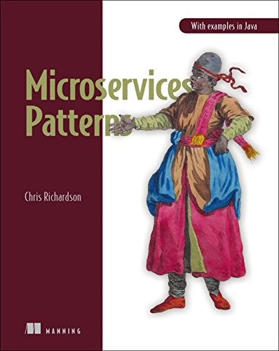
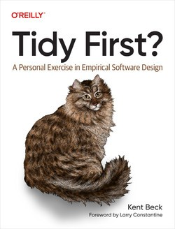

<!DOCTYPE html>
<html lang="en">
  <head>
    <meta charset="utf-8" />
    <meta name="viewport" content="width=device-width, initial-scale=1.0, maximum-scale=1.0, user-scalable=no" />

    <title></title>
    <link rel="stylesheet" href="dist/reveal.css" />
    <link rel="stylesheet" href="dist/theme/beige.css" id="theme" />
    <link rel="stylesheet" href="plugin/highlight/zenburn.css" />
	<link rel="stylesheet" href="css/layout.css" />
	<link rel="stylesheet" href="plugin/customcontrols/style.css">


    <script defer src="dist/fontawesome/all.min.js"></script>

	<script type="text/javascript">
		var forgetPop = true;
		function onPopState(event) {
			if(forgetPop){
				forgetPop = false;
			} else {
				parent.postMessage(event.target.location.href, "app://obsidian.md");
			}
        }
		window.onpopstate = onPopState;
		window.onmessage = event => {
			if(event.data == "reload"){
				window.document.location.reload();
			}
			forgetPop = true;
		}

		function fitElements(){
			const itemsToFit = document.getElementsByClassName('fitText');
			for (const item in itemsToFit) {
				if (Object.hasOwnProperty.call(itemsToFit, item)) {
					var element = itemsToFit[item];
					fitElement(element,1, 1000);
					element.classList.remove('fitText');
				}
			}
		}

		function fitElement(element, start, end){

			let size = (end + start) / 2;
			element.style.fontSize = `${size}px`;

			if(Math.abs(start - end) < 1){
				while(element.scrollHeight > element.offsetHeight){
					size--;
					element.style.fontSize = `${size}px`;
				}
				return;
			}

			if(element.scrollHeight > element.offsetHeight){
				fitElement(element, start, size);
			} else {
				fitElement(element, size, end);
			}		
		}


		document.onreadystatechange = () => {
			fitElements();
			if (document.readyState === 'complete') {
				if (window.location.href.indexOf("?export") != -1){
					parent.postMessage(event.target.location.href, "app://obsidian.md");
				}
				if (window.location.href.indexOf("print-pdf") != -1){
					let stateCheck = setInterval(() => {
						clearInterval(stateCheck);
						window.print();
					}, 250);
				}
			}
	};


        </script>
  </head>
  <body>
    <div class="reveal">
      <div class="slides"><section  data-markdown><script type="text/template"><!-- .slide: class="drop" data-background-image="Adjuntos/slides.eap.png" -->
<div class="" style="position: absolute; left: 0px; top: 0px; height: 700px; width: 960px; min-height: 700px; display: flex; flex-direction: column; align-items: center; justify-content: center" absolute="true">

# Libros

## Recomendaciones
</div></script></section><section  data-markdown><script type="text/template"><!-- .slide: class="drop" -->
<div class="" style="position: absolute; left: 0px; top: 0px; height: 700px; width: 960px; min-height: 700px; display: flex; flex-direction: column; align-items: center; justify-content: center" absolute="true">

# Working Effectively with Legacy Code

## Michael C. Feathers
</div>

<aside class="notes"><p>Bloque de cierre: una selección de libros que han cambiado mi forma de programar.</p>
<p>No es una lista de &quot;debes leer esto&quot;. Es: &quot;esto me dio una idea que sigo usando hoy&quot;.</p>
<p>Para cada libro: 3 ideas, y un par de problema/solución con código real para que se vea aplicado, no solo en teoría.</p>
<!-- .slide: data-background-image="Adjuntos/slides.eap.png" --></aside></script></section><section  data-markdown><script type="text/template"><!-- .slide: class="drop" -->
<div class="" style="position: absolute; left: 0px; top: 0px; height: 700px; width: 960px; min-height: 700px; display: flex; flex-direction: column; align-items: center; justify-content: center" absolute="true">


</div>

<aside class="notes"><p>Probablemente el libro que más veces he recomendado a compañeros nuevos.</p>
<p>Define &quot;código legado&quot; de una forma que cambia el chip: no es código viejo, es código sin red de seguridad. Esa idea sola ya merece la sesión.</p>
<p>Conecta directo con el cierre de la sesión anterior (010): &quot;diseñar para el cambio&quot; es justo el problema que resuelve este libro.</p>
<!-- .slide: data-background-image="Adjuntos/slides.eap.png" --></aside></script></section><section  data-markdown><script type="text/template"><!-- .slide: class="drop" -->
<div class="" style="position: absolute; left: 0px; top: 0px; height: 700px; width: 960px; min-height: 700px; display: flex; flex-direction: column; align-items: center; justify-content: center" absolute="true">

## 📌 3 ideas principales

1. **Código legado = código sin tests**  
   No es cuestión de edad, sino de falta de seguridad para cambiarlo.

2. **Antes de cambiar, proteger el comportamiento actual**  
   Usar tests de caracterización como red de seguridad.

3. **Reducir acoplamiento para poder evolucionar**  
   Crear "seams" (puntos de inyección) para aislar cambios.
</div>

<aside class="notes"><p>La idea 1 es la que más impacto suele tener: mucha gente piensa que &quot;legado&quot; es sinónimo de &quot;antiguo&quot;. No es así — un microservicio de 3 meses sin un solo test ya es código legado bajo esta definición.</p>
<!-- .slide: data-background-image="Adjuntos/slides.eap.png" --></aside></script></section><section  data-markdown><script type="text/template"><!-- .slide: class="drop" -->
<div class="" style="position: absolute; left: 0px; top: 0px; height: 700px; width: 960px; min-height: 700px; display: flex; flex-direction: column; align-items: center; justify-content: center" absolute="true">

## ❌ Problema #1

Clase enorme con todo acoplado:

```java
public class Facturador {
    public void generarFactura(int pedidoId) {
        Connection conn = DriverManager.getConnection("jdbc:mysql://...");
        Statement stmt = conn.createStatement();
        ResultSet rs = stmt.executeQuery("SELECT * FROM pedidos WHERE id=" + pedidoId);
        
        EmailSender email = new EmailSender();
        email.enviar("smtp.gmail.com", "user", "pass", "cliente@mail.com", "Factura", html);
        
        SAPConnector sap = new SAPConnector();
        sap.enviarFactura(rs.getString("cliente"), total);
        
        // 300 líneas más
    }
}
```
**Cada cambio rompe algo inesperado porque todo está mezclado.**
</div>

<aside class="notes"><p>Preguntar al grupo: ¿alguien ha tenido que tocar una clase así? Seguro que sí — es el ejemplo más universal de todos.</p>
<p>Lo interesante no es que exista (todos hemos escrito algo así bajo presión), sino que <strong>nadie se atreve a tocarla después</strong>. Eso es lo que la convierte en legado.</p>
<!-- .slide: data-background-image="Adjuntos/slides.eap.png" --></aside></script></section><section  data-markdown><script type="text/template"><!-- .slide: class="drop" -->
<div class="" style="position: absolute; left: 0px; top: 0px; height: 700px; width: 960px; min-height: 700px; display: flex; flex-direction: column; align-items: center; justify-content: center" absolute="true">

## ✅ Solución #1

Test de caracterización (capturar comportamiento actual antes de tocar):

```java
@Test
void testComportamientoFacturacion() {
    Facturador f = new Facturador();
    String resultado = f.generarFactura(123);
    String expected = leerDeArchivo("factura_123_esperada.txt");
    assertEquals(expected, resultado);
}
```
**Primero congelar, luego refactorizar con seguridad.**
</div>

<aside class="notes"><p>Idea clave: un test de caracterización no comprueba que el código esté bien — comprueba que <strong>hace lo mismo que antes</strong>. Es una fotografía del comportamiento actual, bueno o malo.</p>
<p>Una vez tienes esa fotografía, puedes tocar el código con confianza: si algo cambia, el test te avisa.</p>
<!-- .slide: data-background-image="Adjuntos/slides.eap.png" --></aside></script></section><section  data-markdown><script type="text/template"><!-- .slide: class="drop" -->
<div class="" style="position: absolute; left: 0px; top: 0px; height: 700px; width: 960px; min-height: 700px; display: flex; flex-direction: column; align-items: center; justify-content: center" absolute="true">

## ❌ Problema #2

Dependencias imposibles de aislar (todo se instancia dentro):

```java
public class ProcesadorPagos {
    public void procesar(double importe) {
        Database db = new Database();  // conexión real
        Logger log = new Logger();     // escribe a disco
        Auditoria aud = new Auditoria(); // llama a API externa
        
        db.guardar(importe);
        log.escribir("Procesando " + importe);
        aud.registrar(importe);
        // No se puede probar sin BD real, sin disco, sin API externa
    }
}
```

**No puedes probar una pieza aislada. Todo depende de todo.**
</div>

<aside class="notes"><p>Esta es la trampa más común al empezar: <code>new Database()</code> dentro del método. Parece inofensivo, pero te ata a una conexión real para siempre.</p>
<p>Es el mismo problema, distinto disfraz, que el &quot;Problema #2: dependencias imposibles de aislar&quot; — y la solución (inyectarlas) es la base de la inyección de dependencias que ya usáis a diario con Spring (<code>@Autowired</code>, constructores).</p>
<!-- .slide: data-background-image="Adjuntos/slides.eap.png" --></aside></script></section><section  data-markdown><script type="text/template"><!-- .slide: class="drop" -->
<div class="" style="position: absolute; left: 0px; top: 0px; height: 700px; width: 960px; min-height: 700px; display: flex; flex-direction: column; align-items: center; justify-content: center" absolute="true">

## ✅ Solución #2

Crear seams (puntos de inyección) mediante constructor:

```java
public class ProcesadorPagos {
    private Database db;
    private Logger log;
    private Auditoria aud;
    
    public ProcesadorPagos(Database db, Logger log, Auditoria aud) {
        this.db = db;
        this.log = log;
        this.aud = aud;
    }
    
    public void procesar(double importe) {
        db.guardar(importe);
        log.escribir("Procesando " + importe);
        aud.registrar(importe);
    }
}
```

```java
// En tests:
Database dbMock = mock(Database.class);
Logger logMock = mock(Logger.class);
ProcesadorPagos p = new ProcesadorPagos(dbMock, logMock, mock(Auditoria.class));
```
**Ahora puedes probar cada pieza por separado.**
</div>

<aside class="notes"><p>&quot;Seam&quot; es un término que me parece precioso: literalmente &quot;costura&quot; — un punto donde puedes abrir el código sin romperlo, para meter algo distinto (un mock, un stub) sin tocar el resto.</p>
<p>Spring os hace este trabajo prácticamente gratis con la inyección de dependencias — pero la idea es la misma que aquí, a pelo.</p>
<!-- .slide: data-background-image="Adjuntos/slides.eap.png" --></aside></script></section><section  data-markdown><script type="text/template"><!-- .slide: class="drop" -->
<div class="" style="position: absolute; left: 0px; top: 0px; height: 700px; width: 960px; min-height: 700px; display: flex; flex-direction: column; align-items: center; justify-content: center" absolute="true">

## ❌ Problema #3

"Vamos a reescribirlo entero desde cero" (la trampa clásica):

Equipo: "El sistema actual es un desastre. No se entiende. Mejor empezar de nuevo."
6 meses después: El nuevo sistema tiene 1/10 de funcionalidad, igual de desordenado, y el negocio está frustrado.

**Reescribir suele fracasar porque se repiten los mismos errores sin la presión de tener que mantener el sistema funcionando.**
</div>

<aside class="notes"><p>Esta es LA conversación que se repite en todas las empresas cada pocos años. &quot;Vamos a tirarlo y empezar de cero, en limpio.&quot;</p>
<p>Pregunta para el grupo: ¿alguien ha vivido una reescritura desde cero? ¿Cómo terminó?</p>
<p>El motivo del fracaso no es técnico, es humano: el sistema viejo lleva años absorbiendo casos raros del negocio real. Esos casos no están documentados en ningún sitio — están en el código. Al reescribir, los pierdes todos, y los vas a redescubrir uno a uno, en producción, otra vez.</p>
<!-- .slide: data-background-image="Adjuntos/slides.eap.png" --></aside></script></section><section  data-markdown><script type="text/template"><!-- .slide: class="drop" -->
<div class="" style="position: absolute; left: 0px; top: 0px; height: 700px; width: 960px; min-height: 700px; display: flex; flex-direction: column; align-items: center; justify-content: center" absolute="true">

## ✅ Solución #3

Cambios pequeños y seguros (estrategia de golondrina):

Paso 1: Extraer método
```java
public void generarFactura() {
    validarDatos();
    calcularTotales();
    aplicarImpuestos();
    generarPDF();
    enviarEmail();
    registrarEnSAP();
}
```
Paso 2: Extraer clase
```java
public class GeneradorPDF {
    public byte[] generar(Factura f) { ... }
}
```

Paso 3: Mover responsabilidades una a una
```java
public class Facturador {
    private GeneradorPDF pdf = new GeneradorPDF();
    private EmailSender email = new EmailSender();
    // cada pieza se prueba por separado
}
```
**Reescribir suele fracasar. Evolucionar poco a poco suele funcionar.**
</div>

<aside class="notes"><p>&quot;Estrategia de la golondrina&quot; (strangler fig en el original): rodeas el sistema viejo poco a poco con piezas nuevas, hasta que el viejo deja de hacer falta. Nunca hay un &quot;big bang&quot;, nunca hay un día de parón total.</p>
<p>Fijaos en el orden: primero solo reorganizar (extraer método/clase) sin cambiar comportamiento, y solo al final, con las piezas ya separadas y testeadas, tocar la lógica. Es la misma idea que vais a ver más adelante con &quot;Tidy First?&quot; de Kent Beck — no es casualidad, son ideas que se repiten porque funcionan.</p>
<!-- .slide: data-background-image="Adjuntos/slides.eap.png" --></aside></script></section><section  data-markdown><script type="text/template"><!-- .slide: class="drop" -->
<div class="" style="position: absolute; left: 0px; top: 0px; height: 700px; width: 960px; min-height: 700px; display: flex; flex-direction: column; align-items: center; justify-content: center" absolute="true">

# Head First Design Patterns

## Freeman & Robson
</div>

<aside class="notes"><p>El libro con el que mucha gente &quot;entiende&quot; los patrones de diseño por primera vez — el formato es muy visual y con ejemplos tontos a propósito (patos, pizzas, cafés) para que la idea quede grabada.</p>
<p>Aviso: no hace falta memorizar nombres de patrones. Lo que importa es la idea de fondo: hay problemas de diseño que se repiten, y ya hay vocabulario común para hablar de ellos con otros desarrolladores.</p>
<!-- .slide: data-background-image="Adjuntos/slides.eap.png" --></aside></script></section><section  data-markdown><script type="text/template"><!-- .slide: class="drop" data-background-image="Adjuntos/slides.eap.png" -->
<div class="" style="position: absolute; left: 0px; top: 0px; height: 700px; width: 960px; min-height: 700px; display: flex; flex-direction: column; align-items: center; justify-content: center" absolute="true">


</div></script></section><section  data-markdown><script type="text/template"><!-- .slide: class="drop" -->
<div class="" style="position: absolute; left: 0px; top: 0px; height: 700px; width: 960px; min-height: 700px; display: flex; flex-direction: column; align-items: center; justify-content: center" absolute="true">

## 📌 3 ideas principales

1. **Composición sobre herencia**  
   Preferir "tiene un" en lugar de "es un".

2. **Encapsular lo que cambia**  
   Aislar variaciones en interfaces.

3. **Diseñar para la evolución**  
   Abierto a extensiones, cerrado a modificaciones.
</div>

<aside class="notes"><p>La idea 3 es literalmente el principio Abierto/Cerrado de SOLID — si ya os sonaba de antes, es la misma idea contada con otras palabras y con ejemplos muy gráficos.</p>
<!-- .slide: data-background-image="Adjuntos/slides.eap.png" --></aside></script></section><section  data-markdown><script type="text/template"><!-- .slide: class="drop" -->
<div class="" style="position: absolute; left: 0px; top: 0px; height: 700px; width: 960px; min-height: 700px; display: flex; flex-direction: column; align-items: center; justify-content: center" absolute="true">

## ❌ Problema #1

Ifs infinitos que crecen con cada nuevo tipo:

```
class CalculadorDescuento {
    double calcular(Cliente cliente, Producto producto) {
        if (cliente.esVIP() && producto.esElectronico()) {
            return 0.20;
        } else if (cliente.esVIP() && producto.esRopa()) {
            return 0.15;
        } else if (cliente.esNuevo() && producto.esElectronico()) {
            return 0.05;
        } else if (cliente.esNuevo() && producto.esRopa()) {
            return 0.03;
        } else if (fechaNavidad() && cliente.esRegular()) {
            return 0.10;
        }
        // Cada nueva promoción = otro if
        return 0;
    }
}
```

**Violación del principio Abierto/Cerrado: cada nueva condición obliga a modificar esta clase.**
</div>

<aside class="notes"><p>Preguntar: ¿quién ha visto un método con más de 5 <code>else if</code> encadenados? Las manos arriba van a ser muchas.</p>
<p>Lo curioso es que cada <code>if</code> individual parecía la solución más rápida en su momento. El problema aparece al sumar 20 de ellos.</p>
<!-- .slide: data-background-image="Adjuntos/slides.eap.png" --></aside></script></section><section  data-markdown><script type="text/template"><!-- .slide: class="drop" -->
<div class="" style="position: absolute; left: 0px; top: 0px; height: 700px; width: 960px; min-height: 700px; display: flex; flex-direction: column; align-items: center; justify-content: center" absolute="true">

## ✅ Solución #1

Strategy Pattern encapsula cada política:

```java
interface PoliticaDescuento {
    double calcular(Cliente c, Producto p);
}

class VIPElectronicoStrategy implements PoliticaDescuento {
    public double calcular(Cliente c, Producto p) {
        return c.esVIP() && p.esElectronico() ? 0.20 : 0;
    }
}

class NavidadStrategy implements PoliticaDescuento {
    public double calcular(Cliente c, Producto p) {
        return esFechaNavidad() && c.esRegular() ? 0.10 : 0;
    }
}

class CalculadorDescuento {
    private List<PoliticaDescuento> politicas = new ArrayList<>();
    
    double calcular(Cliente c, Producto p) {
        return politicas.stream()
            .map(po -> po.calcular(c, p))
            .max(Double::compare)
            .orElse(0.0);
    }
}
```
**Nuevas políticas = nuevas clases. La clase original nunca se modifica.**
</div>

<aside class="notes"><p>Esto es exactamente lo que hicisteis en 010 con &quot;Mejor enfoque: configuración externa&quot; llevado al extremo — en vez de tocar código para cada caso nuevo, añades una pieza nueva (una clase) y dejas la existente intacta.</p>
<p>Es el mismo principio que hace que añadir un endpoint nuevo no debería romper los que ya existían.</p>
<!-- .slide: data-background-image="Adjuntos/slides.eap.png" --></aside></script></section><section  data-markdown><script type="text/template"><!-- .slide: class="drop" -->
<div class="" style="position: absolute; left: 0px; top: 0px; height: 700px; width: 960px; min-height: 700px; display: flex; flex-direction: column; align-items: center; justify-content: center" absolute="true">

## ❌ Problema #2

Herencia mal aplicada que obliga a sobrescribir comportamientos no deseados:

```java
class Pato {
    void volar() { System.out.println("Vuelo con alas"); }
    void quack() { System.out.println("Quack"); }
    void nadar() { System.out.println("Nado"); }
}
```

```java
class PatoGoma extends Pato {
    @Override
    void volar() {
        // No hacer nada. Los patos de goma no vuelan.
    }
    @Override
    void quack() {
        System.out.println("Squeak");  // Chillido, no quack
    }
}
```

```java
class PatoLadrillo extends Pato {
    @Override
    void volar() { }
    @Override
    void quack() { }
    @Override
    void nadar() { }
}
```
**Cada nueva variación obliga a sobrescribir métodos y duplicar lógica.**
</div>

<aside class="notes"><p>Ejemplo clásico del libro (literalmente la portada es un pato). Cada subclase nueva trae consigo la obligación de &quot;desactivar&quot; comportamientos heredados que no le sirven — señal clara de que la herencia no es la herramienta correcta aquí.</p>
<p>&quot;Es un&quot; (PatoGoma es un Pato) suena natural en el lenguaje, pero en código genera este lío. La pregunta que hace el libro: ¿y si en vez de &quot;es un&quot; pensamos en &quot;tiene un&quot; comportamiento de volar, otro de hacer ruido...?</p>
<!-- .slide: data-background-image="Adjuntos/slides.eap.png" --></aside></script></section><section  data-markdown><script type="text/template"><!-- .slide: class="drop" -->
<div class="" style="position: absolute; left: 0px; top: 0px; height: 700px; width: 960px; min-height: 700px; display: flex; flex-direction: column; align-items: center; justify-content: center" absolute="true">

## ✅ Solución #2

Composición: extraer los comportamientos que varían a sus propias interfaces:

```java
interface ComportamientoVolar {
    void volar();
}

class VolarConAlas implements ComportamientoVolar {
    public void volar() { System.out.println("Vuelo con alas"); }
}

class NoVolar implements ComportamientoVolar {
    public void volar() { System.out.println("No puedo volar"); }
}
```

```java
interface ComportamientoQuack {
    void quack();
}

class QuackReal implements ComportamientoQuack {
    public void quack() { System.out.println("Quack"); }
}

class Squeak implements ComportamientoQuack {
    public void quack() { System.out.println("Squeak"); }
}
```
</div>

<aside class="notes"><p>Primer paso, y el más importante: en lugar de meter el comportamiento dentro de cada subclase de pato (como en el Problema #2), lo sacamos a sus propias familias de clases — una para volar, otra para hacer ruido.</p>
<p>Cada comportamiento es ahora una pieza independiente, intercambiable, testeable por separado. Todavía no hemos tocado <code>Pato</code> — eso viene en la siguiente slide.</p>
<!-- .slide: data-background-image="Adjuntos/slides.eap.png" --></aside></script></section><section  data-markdown><script type="text/template"><!-- .slide: class="drop" -->
<div class="" style="position: absolute; left: 0px; top: 0px; height: 700px; width: 960px; min-height: 700px; display: flex; flex-direction: column; align-items: center; justify-content: center" absolute="true">

## ✅ Solución #2 (cont.)

Componer en lugar de heredar:

```java
class Pato {
    private ComportamientoVolar volarComportamiento;
    private ComportamientoQuack quackComportamiento;
    
    void volar() { volarComportamiento.volar(); }
    void quack() { quackComportamiento.quack(); }
}

class PatoGoma extends Pato {
    public PatoGoma() {
        volarComportamiento = new NoVolar();
        quackComportamiento = new Squeak();
    }
}
```

**Comportamiento = objetos. Se combinan sin herencia forzada.**
</div>

<aside class="notes"><p>Esto es Strategy otra vez, aplicado al comportamiento en lugar de a una política de descuento — el mismo patrón resuelve problemas que parecen completamente distintos. Esa es la gracia de aprender patrones: una vez los ves, los reconoces en todas partes.</p>
<p>&quot;Tiene un&quot; en lugar de &quot;es un&quot;: el pato ya no hereda su forma de volar, la <strong>contiene</strong> como una pieza intercambiable. Si mañana aparece un <code>PatoConJetpack</code>, no tocáis ni una línea de <code>Pato</code> — solo creáis un <code>ComportamientoVolar</code> nuevo.</p>
<!-- .slide: data-background-image="Adjuntos/slides.eap.png" --></aside></script></section><section  data-markdown><script type="text/template"><!-- .slide: class="drop" -->
<div class="" style="position: absolute; left: 0px; top: 0px; height: 700px; width: 960px; min-height: 700px; display: flex; flex-direction: column; align-items: center; justify-content: center" absolute="true">

## ❌ Problema #3

Objetos demasiado conectados (cambias una clase y rompes 5 más):

```java
class Boton {
    private Lampara lampara;
    
    void click() {
        if (lampara.estaEncendida()) {
            lampara.apagar();
        } else {
            lampara.encender();
        }
    }
}

class Lampara {
    private Ventilador ventilador;
    
    void encender() {
        System.out.println("Luz encendida");
        ventilador.encender();  // ¿Por qué la lámpara enciende el ventilador?
    }
}

class Ventilador {
    private Alarma alarma;
    
    void encender() {
        System.out.println("Ventilador encendido");
        alarma.activar();  // ¿Ventilador activa alarma?
    }
}
```

**Acoplamiento en cadena: cambiar un comportamiento afecta a toda la jerarquía.**
</div>

<aside class="notes"><p>Fijaos en el comentario dentro del código: &quot;¿Por qué la lámpara enciende el ventilador?&quot; — esa pregunta, escrita por el propio desarrollador, es la señal de alarma. Cuando una clase necesita conocer a otra solo para avisarla de algo, hay acoplamiento de más.</p>
<p>El síntoma típico: tocas <code>Boton</code> para añadir una funcionalidad y, sin comerlo ni beberlo, rompes <code>Alarma</code>.</p>
<!-- .slide: data-background-image="Adjuntos/slides.eap.png" --></aside></script></section><section  data-markdown><script type="text/template"><!-- .slide: class="drop" -->
<div class="" style="position: absolute; left: 0px; top: 0px; height: 700px; width: 960px; min-height: 700px; display: flex; flex-direction: column; align-items: center; justify-content: center" absolute="true">

## ✅ Solución #3

Observer Pattern para comunicación desacoplada:

```java
interface Observer {
    void update(String evento);
}

interface Subject {
    void agregarObserver(Observer o);
    void notificarObservers(String evento);
}

class Boton implements Subject {
    private List<Observer> observers = new ArrayList<>();
    
    void click() {
        notificarObservers("boton_clickeado");
    }
    
    public void agregarObserver(Observer o) { observers.add(o); }
    public void notificarObservers(String evento) {
        for (Observer o : observers) o.update(evento);
    }
}

class Lampara implements Observer {
    private boolean encendida = false;
    
    public void update(String evento) {
        if (evento.equals("boton_clickeado")) {
            encendida = !encendida;
            System.out.println("Lámpara: " + (encendida ? "ON" : "OFF"));
        }
    }
}

class Alarma implements Observer {
    public void update(String evento) { ... }
}
```

**Los objetos se comunican sin conocerse directamente. Añadir comportamientos no requiere modificar clases existentes.**
</div>

<aside class="notes"><p>El botón ya no conoce ni a la lámpara, ni al ventilador, ni a la alarma — solo sabe que &quot;algo pasó&quot; y lo anuncia. Quien quiera escuchar, escucha.</p>
<p>Si esto os suena: es la misma idea de fondo que los eventos de Spring (<code>ApplicationEventPublisher</code>) o, a otra escala, los sistemas de mensajería (Kafka, RabbitMQ) que veréis mencionados más adelante en &quot;Microservices Patterns&quot;. El patrón es el mismo, cambia la escala.</p>
<!-- .slide: data-background-image="Adjuntos/slides.eap.png" --></aside></script></section><section  data-markdown><script type="text/template"><!-- .slide: class="drop" -->
<div class="" style="position: absolute; left: 0px; top: 0px; height: 700px; width: 960px; min-height: 700px; display: flex; flex-direction: column; align-items: center; justify-content: center" absolute="true">

# The Pragmatic Programmer

## Andrew Hunt & David Thomas
</div>

<aside class="notes"><p>Un libro de &quot;consejos sueltos&quot; más que de teoría unificada — y por eso es tan citable. Cada idea cabe en una frase y se queda.</p>
<p>DRY es probablemente el acrónimo de programación más repetido del mundo. Vamos a verlo en su contexto real, no como dogma.</p>
<!-- .slide: data-background-image="Adjuntos/slides.eap.png" --></aside></script></section><section  data-markdown><script type="text/template"><!-- .slide: class="drop" data-background-image="Adjuntos/slides.eap.png" -->
<div class="" style="position: absolute; left: 0px; top: 0px; height: 700px; width: 960px; min-height: 700px; display: flex; flex-direction: column; align-items: center; justify-content: center" absolute="true">


</div></script></section><section  data-markdown><script type="text/template"><!-- .slide: class="drop" -->
<div class="" style="position: absolute; left: 0px; top: 0px; height: 700px; width: 960px; min-height: 700px; display: flex; flex-direction: column; align-items: center; justify-content: center" absolute="true">

## 📌 3 ideas principales

1. **DRY (Don't Repeat Yourself)**  
   Cada conocimiento vive en un solo lugar.

2. **Automatizar tareas repetitivas**  
   Si duele, hazlo más seguido (y automatiza).

3. **Diseño evolutivo**  
   Pequeños cambios constantes, no grandes rediseños.
</div>

<aside class="notes"><p>La idea 2 (&quot;si duele, hazlo más seguido&quot;) suena contraintuitiva la primera vez que la oyes — pero es muy potente: si desplegar duele, despliega cada día hasta que deje de doler (automatizándolo). Es la filosofía detrás de todo el bloque de CI/CD que vimos en 007.</p>
<!-- .slide: data-background-image="Adjuntos/slides.eap.png" --></aside></script></section><section  data-markdown><script type="text/template"><!-- .slide: class="drop" -->
<div class="" style="position: absolute; left: 0px; top: 0px; height: 700px; width: 960px; min-height: 700px; display: flex; flex-direction: column; align-items: center; justify-content: center" absolute="true">

## ❌ Problema #1

Conocimiento duplicado en múltiples lugares:
```java
// En el backend
public double calcularDescuento(Usuario u) {
    if (u.esPremium() && u.antiguedad() > 12) {
        return 0.15;
    }
    return 0;
}
```

```javascript
// En el frontend (JavaScript)
function calcularDescuento(usuario) {
    if (usuario.premium && usuario.antiguedad > 12) {
        return 0.15;
    }
    return 0;
}
```

```sql
-- En la base de datos (vista)
CREATE VIEW v_descuentos AS
SELECT *, CASE WHEN premium AND antiguedad > 12 THEN 0.15 ELSE 0 END AS descuento
FROM usuarios;
```

**Un cambio en la lógica de negocio requiere modificar 3 lugares. Siempre habrá uno desactualizado.**
</div>

<aside class="notes"><p>Esto pasa muchísimo con reglas de negocio &quot;pequeñas&quot; — el famoso &quot;0.15 de descuento&quot; que alguien copia y pega porque &quot;es solo una línea&quot;.</p>
<p>Seis meses después Marketing decide que el descuento sube a 0.20. Backend se actualiza. Frontend, no. La vista de BD, tampoco. Y empiezan las llamadas de &quot;esto no cuadra&quot;.</p>
<!-- .slide: data-background-image="Adjuntos/slides.eap.png" --></aside></script></section><section  data-markdown><script type="text/template"><!-- .slide: class="drop" -->
<div class="" style="position: absolute; left: 0px; top: 0px; height: 700px; width: 960px; min-height: 700px; display: flex; flex-direction: column; align-items: center; justify-content: center" absolute="true">

## ✅ Solución #1

DRY: centralizar la regla en un solo lugar:
```java
// Backend: única fuente de verdad
public class PoliticaDescuentos {
    public static final double DESCUENTO_PREMIUM_ANTIGUO = 0.15;
    
    public static double calcular(Usuario u) {
        if (u.esPremium() && u.antiguedad() > 12) {
            return DESCUENTO_PREMIUM_ANTIGUO;
        }
        return 0.0;
    }
}
```
```javascript
// Frontend: llama a la API
fetch('/api/descuento/' + userId)
    .then(r => r.json())
    .then(data => aplicarDescuento(data.descuento));
```
```sql
-- Base de datos: no guardar lógica duplicada, solo datos
SELECT premium, antiguedad FROM usuarios;  -- Lógica en aplicación
```

**Un solo lugar de verdad. Los cambios son seguros y consistentes.**
</div>

<aside class="notes"><p>DRY no significa &quot;nunca escribas dos líneas parecidas&quot; — significa que cada <strong>regla de negocio</strong> (no cada línea de código) tenga un único dueño. El frontend y la BD dejan de &quot;saber&quot; la regla; solo preguntan al backend.</p>
<p>Ojo con el extremo contrario: forzar abstracciones para no repetir dos líneas que solo se parecen por casualidad genera el problema opuesto (acoplamientos artificiales). DRY es sobre conocimiento, no sobre texto.</p>
<!-- .slide: data-background-image="Adjuntos/slides.eap.png" --></aside></script></section><section  data-markdown><script type="text/template"><!-- .slide: class="drop" -->
<div class="" style="position: absolute; left: 0px; top: 0px; height: 700px; width: 960px; min-height: 700px; display: flex; flex-direction: column; align-items: center; justify-content: center" absolute="true">

## ❌ Problema #2

Procesos manuales que generan errores:

Desarrollador: "Voy a desplegar a producción"
1. Compilar localmente
2. Copiar JAR al servidor manualmente (scp)
3. Conectarse por SSH
4. Detener el servicio: `sudo systemctl stop app`
5. Reemplazar el JAR
6. Iniciar servicio: `sudo systemctl start app`
7. Revisar logs: `tail -f /var/log/app.log`
8. Si falla, repetir desde paso 4

"Casi siempre olvido el paso 5 o me equivoco de servidor"

**Los procesos manuales garantizan errores humanos.**
</div>

<aside class="notes"><p>¿Os suena de algo? Es justo lo que vimos en la sesión de <strong>Despliegue (CI/CD)</strong> — el &quot;antes&quot; que justifica todo el &quot;después&quot;. Aquí no es teoría: es la frase real de cualquier desarrollador un viernes a las 18h.</p>
<!-- .slide: data-background-image="Adjuntos/slides.eap.png" --></aside></script></section><section  data-markdown><script type="text/template"><!-- .slide: class="drop" -->
<div class="" style="position: absolute; left: 0px; top: 0px; height: 700px; width: 960px; min-height: 700px; display: flex; flex-direction: column; align-items: center; justify-content: center" absolute="true">

## ✅ Solución #2

Automatizar con script (CI/CD):

```bash
# deploy.sh
#!/bin/bash
# Un solo comando: ./deploy.sh produccion

ENV=$1
echo "Desplegando a $ENV"

# Compilar
mvn clean package

# Ejecutar tests
mvn test
if [ $? -ne 0 ]; then
    echo "Tests fallaron. No desplegar."
    exit 1
fi

# Desplegar según entorno
if [ "$ENV" == "produccion" ]; then
    scp target/app.jar prod-server:/opt/app/
    ssh prod-server "sudo systemctl restart app"
elif [ "$ENV" == "staging" ]; then
    scp target/app.jar staging-server:/opt/app/
    ssh staging-server "docker-compose restart app"
fi

echo "Despliegue completado"
```

**Automatizar todo lo que se hace más de una vez. Los errores humanos desaparecen.**
</div>

<aside class="notes"><p>Fijaos en el detalle: el script para si los tests fallan (<code>exit 1</code>). Eso es exactamente lo que hace el pipeline de GitLab CI que vimos en 007 — la diferencia es solo la herramienta, la idea de fondo (&quot;no despliegues si los tests no pasan&quot;) es la misma.</p>
<p>&quot;Si duele, hazlo más seguido&quot; en acción: automatizar el despliegue no solo evita errores, sino que hace que desplegar deje de ser un evento estresante y pase a ser rutina.</p>
<!-- .slide: data-background-image="Adjuntos/slides.eap.png" --></aside></script></section><section  data-markdown><script type="text/template"><!-- .slide: class="drop" -->
<div class="" style="position: absolute; left: 0px; top: 0px; height: 700px; width: 960px; min-height: 700px; display: flex; flex-direction: column; align-items: center; justify-content: center" absolute="true">

## ❌ Problema #3

Código rígido que no se puede modificar sin romper todo:

```java
public class ReporteFinanciero {
    public String generar() {
        // Lógica fija
        String encabezado = "=== REPORTE FINANCIERO ===\n";
        String cuerpo = "";
        
        Connection conn = DriverManager.getConnection(...);
        Statement stmt = conn.createStatement();
        ResultSet rs = stmt.executeQuery("SELECT * FROM ventas");
        
        while(rs.next()) {
            cuerpo += rs.getString("fecha") + ": $" + rs.getDouble("monto") + "\n";
        }
        
        String pie = "Total: " + calcularTotal(rs) + "\n";
        return encabezado + cuerpo + pie;
    }
}
```

**¿Quieres cambiar el formato a CSV? ¿Añadir filtro por fecha? ¿Usar otra base de datos? Imposible sin reescribir todo.**
</div>

<aside class="notes"><p>Mismo síntoma que vimos en &quot;Legacy Code&quot; Problema #1 (la clase <code>Facturador</code> con todo mezclado): SQL, formato de salida y lógica de negocio, todo en el mismo método.</p>
<p>La pregunta del millón: ¿cuántas veces os han pedido &quot;lo mismo pero en CSV&quot; o &quot;lo mismo pero filtrado por fecha&quot;? Este código no está preparado para esa pregunta tan habitual.</p>
<!-- .slide: data-background-image="Adjuntos/slides.eap.png" --></aside></script></section><section  data-markdown><script type="text/template"><!-- .slide: class="drop" -->
<div class="" style="position: absolute; left: 0px; top: 0px; height: 700px; width: 960px; min-height: 700px; display: flex; flex-direction: column; align-items: center; justify-content: center" absolute="true">

## ✅ Solución #3

Diseño evolutivo con separación de responsabilidades:

```java
public interface ReporteExportador {
    String exportar(List<Venta> ventas);
}

public class HTMLExportador implements ReporteExportador {
    public String exportar(List<Venta> ventas) { ... }
}

public class CSVExportador implements ReporteExportador {
    public String exportar(List<Venta> ventas) { ... }
}
```

```java
public class ReporteFinanciero {
    private RepositorioVentas repo;
    private ReporteExportador exportador;
    
    public ReporteFinanciero(RepositorioVentas repo, ReporteExportador exp) {
        this.repo = repo;
        this.exportador = exp;
    }
    
    public String generar(Date desde, Date hasta) {
        List<Venta> ventas = repo.obtenerPorRango(desde, hasta);
        return exportador.exportar(ventas);
    }
}

// Uso:
ReporteFinanciero r = new ReporteFinanciero(
    new MySQLVentasRepo(), 
    new HTMLExportador()
);
```
**Pequeños cambios constantes: cambiar formato = cambiar exportador. Cambiar BD = cambiar repositorio. Cada pieza evoluciona independiente.**
</div>

<aside class="notes"><p>Otra vez Strategy (<code>ReporteExportador</code> con varias implementaciones) y otra vez inyección por constructor (<code>RepositorioVentas</code>, <code>ReporteExportador</code>) — los mismos dos patrones que ya habéis visto dos veces en esta sesión.</p>
<p>Ese es el verdadero valor de conocer estos nombres: cuando los reconocéis, dejáis de inventar la rueda cada vez y empezáis a aplicar soluciones ya probadas.</p>
<!-- .slide: data-background-image="Adjuntos/slides.eap.png" --></aside></script></section><section  data-markdown><script type="text/template"><!-- .slide: class="drop" -->
<div class="" style="position: absolute; left: 0px; top: 0px; height: 700px; width: 960px; min-height: 700px; display: flex; flex-direction: column; align-items: center; justify-content: center" absolute="true">

# A Philosophy of Software Design

## John Ousterhout
</div>

<aside class="notes"><p>Este es algo más denso que los anteriores — viene de un profesor de Stanford que mide la calidad del diseño casi como una ciencia. No hace falta dominarlo todo; con quedaros con la idea de &quot;módulo profundo&quot; ya merece la pena.</p>
<p>Aviso: algunos ejemplos de este libro (como veréis) entran en terreno de diseño de APIs a gran escala — más cercano al curso avanzado que al día a día de &quot;medio&quot;. Tomadlo como un adelanto.</p>
<!-- .slide: data-background-image="Adjuntos/slides.eap.png" --></aside></script></section><section  data-markdown><script type="text/template"><!-- .slide: class="drop" data-background-image="Adjuntos/slides.eap.png" -->
<div class="" style="position: absolute; left: 0px; top: 0px; height: 700px; width: 960px; min-height: 700px; display: flex; flex-direction: column; align-items: center; justify-content: center" absolute="true">


</div></script></section><section  data-markdown><script type="text/template"><!-- .slide: class="drop" -->
<div class="" style="position: absolute; left: 0px; top: 0px; height: 700px; width: 960px; min-height: 700px; display: flex; flex-direction: column; align-items: center; justify-content: center" absolute="true">

## 📌 3 ideas principales

1. **Reducir complejidad accidental**  
   La complejidad es el enemigo #1.

2. **Deep Modules (módulos profundos)**  
   Interfaces simples, funcionalidad compleja por dentro.

3. **Diseñar para reducir carga mental**  
   El mejor código es el que no necesitas recordar.
</div>

<aside class="notes"><p>&quot;Complejidad accidental&quot; vs &quot;complejidad esencial&quot;: la esencial viene del propio problema (gestionar préstamos de una biblioteca tiene su complejidad inherente); la accidental es la que añadimos nosotros con malas decisiones de diseño. Esta última es la que se puede — y se debe — eliminar.</p>
<!-- .slide: data-background-image="Adjuntos/slides.eap.png" --></aside></script></section><section  data-markdown><script type="text/template"><!-- .slide: class="drop" -->
<div class="" style="position: absolute; left: 0px; top: 0px; height: 700px; width: 960px; min-height: 700px; display: flex; flex-direction: column; align-items: center; justify-content: center" absolute="true">

## ❌ Problema #1

APIs enormes (módulos superficiales):

```java
public class HttpConnector {
    // 15 métodos públicos
    public void setHost(String host) { ... }
    public void setPort(int port) { ... }
    public void setTimeout(int millis) { ... }
    public void setSSL(boolean ssl) { ... }
    public void setAuth(String user, String pass) { ... }
    public void setRetries(int n) { ... }
    public void setBackoff(int millis) { ... }
    public void connect() { ... }
    public void send(String data) { ... }
    public void sendBinary(byte[] data) { ... }
    public String receive() { ... }
    public void close() { ... }
    // ... más métodos
}
```

**El usuario debe conocer 15 métodos para hacer algo simple. Cada método aumenta la carga mental.**
</div>

<aside class="notes"><p>&quot;Módulo superficial&quot; = mucha interfaz (15 métodos públicos), poca funcionalidad por método. El coste no es escribirlo, es <strong>usarlo</strong>: cada método que expones es algo que otra persona (o tú dentro de 6 meses) tiene que aprender y recordar.</p>
<p>Pensad en JDBC puro vs un repositorio de Spring Data: ambos &quot;conectan con la base de datos&quot;, pero uno os obliga a conocer <code>Connection</code>, <code>Statement</code>, <code>ResultSet</code>... y el otro os da <code>findAll()</code>.</p>
<!-- .slide: data-background-image="Adjuntos/slides.eap.png" --></aside></script></section><section  data-markdown><script type="text/template"><!-- .slide: class="drop" -->
<div class="" style="position: absolute; left: 0px; top: 0px; height: 700px; width: 960px; min-height: 700px; display: flex; flex-direction: column; align-items: center; justify-content: center" absolute="true">

## ✅ Solución #1

Deep Module (interfaz pequeña, funcionalidad rica):

```java
public class HttpConnector {
    // Solo 3 métodos públicos
    public void configure(String url, int timeout, boolean ssl) { ... }
    public String sendAndReceive(String request) { ... }
    public void close() { ... }
    
    // Toda la complejidad está dentro de estos pocos métodos
    private void manageRetries() { ... }
    private void handleAuth() { ... }
    private void connectionPooling() { ... }
    private void errorRecovery() { ... }
}

// Uso:
HttpConnector c = new HttpConnector();
c.configure("https://api.ejemplo.com", 5000, true);
String respuesta = c.sendAndReceive("{\"query\":\"getUser\"}");
```

**El usuario no necesita saber sobre SSL, reintentos, auth, pooling. La complejidad está oculta en un módulo profundo.**
</div>

<aside class="notes"><p>&quot;Profundo&quot; no significa &quot;grande por dentro y por fuera&quot; — significa <strong>mucha funcionalidad detrás de poca interfaz</strong>. Esa relación (funcionalidad / superficie expuesta) es la que define si un módulo es bueno.</p>
<p>Buen ejercicio mental: la próxima vez que diseñéis una clase, preguntaos &quot;¿cuántos métodos necesita conocer quien la use para hacer lo normal?&quot;. Si la respuesta es más de 3-4, probablemente se pueda simplificar.</p>
<!-- .slide: data-background-image="Adjuntos/slides.eap.png" --></aside></script></section><section  data-markdown><script type="text/template"><!-- .slide: class="drop" -->
<div class="" style="position: absolute; left: 0px; top: 0px; height: 700px; width: 960px; min-height: 700px; display: flex; flex-direction: column; align-items: center; justify-content: center" absolute="true">

## ❌ Problema #2

Clases superficiales que fragmentan la lógica:

```java
public class UserManager { ... }
public class UserManagerFactory { ... }
public class UserManagerFactoryProcessor { ... }
public class UserManagerFactoryProcessorHelper { ... }
public class UserManagerFactoryProcessorHelperImpl { ... }

// Para hacer algo simple:
UserManagerFactory factory = new UserManagerFactory();
UserManagerFactoryProcessor processor = factory.createProcessor();
UserManagerFactoryProcessorHelper helper = processor.getHelper();
UserManager manager = helper.getManager();
manager.doSomething();
```

**Cada nueva clase añade complejidad de navegación. El programador debe saltar entre 5 archivos para entender una operación simple.**
</div>

<aside class="notes"><p>Esto es una caricatura, pero una caricatura con base real — hay frameworks Java de hace años (sí, esos que igual algunos habéis sufrido) que se acercan bastante a esto. &quot;FactoryProcessorHelperImpl&quot; no es una broma inventada, es casi un homenaje.</p>
<p>El coste no es solo escribir tanto código — es que cada nivel de indirección es un sitio más donde el bug se puede esconder, y un salto más que dar con Ctrl+clic para entender qué hace una línea.</p>
<!-- .slide: data-background-image="Adjuntos/slides.eap.png" --></aside></script></section><section  data-markdown><script type="text/template"><!-- .slide: class="drop" -->
<div class="" style="position: absolute; left: 0px; top: 0px; height: 700px; width: 960px; min-height: 700px; display: flex; flex-direction: column; align-items: center; justify-content: center" absolute="true">

## ✅ Solución #2

Clases con responsabilidad clara y completa:

```java
public class UserService {
    // Un solo lugar para toda la lógica de usuarios
    private UserRepository repo;
    private EmailService email;
    private Cache cache;
    
    public UserService(UserRepository repo, EmailService email, Cache cache) {
        this.repo = repo;
        this.email = email;
        this.cache = cache;
    }
    
    public User crearUsuario(String nombre, String email) {
        User u = new User(nombre, email);
        repo.guardar(u);
        cache.invalidar("usuarios");
        this.email.enviarBienvenida(email);
        return u;
    }
    
    public User obtenerPorId(int id) {
        User u = cache.obtener("user_" + id);
        if (u == null) {
            u = repo.buscar(id);
            cache.guardar("user_" + id, u);
        }
        return u;
    }
}

// Uso:
UserService service = new UserService(repo, email, cache);
User u = service.crearUsuario("Juan", "juan@mail.com");
```

**Una clase bien diseñada hace una cosa y la hace completamente. No necesitas navegar entre factories y helpers.**
</div>

<aside class="notes"><p>Comparad este <code>UserService</code> con el <code>HttpConnector</code> de antes — mismo concepto, &quot;deep module&quot;: una interfaz pequeña (<code>crearUsuario</code>, <code>obtenerPorId</code>) que esconde dentro caché, email, repositorio... el usuario de la clase no necesita saber nada de eso.</p>
<p>Esto debería sonaros también a los <code>@Service</code> que ya escribís en Spring — la diferencia entre uno bien diseñado y uno mal diseñado no es la anotación, es justo esto.</p>
<!-- .slide: data-background-image="Adjuntos/slides.eap.png" --></aside></script></section><section  data-markdown><script type="text/template"><!-- .slide: class="drop" -->
<div class="" style="position: absolute; left: 0px; top: 0px; height: 700px; width: 960px; min-height: 700px; display: flex; flex-direction: column; align-items: center; justify-content: center" absolute="true">

## ❌ Problema #3

Comentarios inútiles que no añaden valor:

```java
public double calcularInteres(double capital, double tasa, int años) {
    // Suma uno a i
    // En realidad esto es i = i + 1
    // Pero no sé por qué
    i++;  // incrementa i
    
    // Llama al método calcular
    // Este método calcula algo
    double resultado = calcular(capital, tasa);
    
    // Retorna el resultado
    return resultado;  // devuelve el resultado
}
```

**Los comentarios que explican "qué" (el código ya lo dice) son ruido. Los comentarios útiles explican "por qué".**
</div>

<aside class="notes"><p>Esto seguro que provoca alguna risa nerviosa — todos hemos visto (o escrito) un <code>i++; // incrementa i</code>.</p>
<p>La pregunta que de verdad importa no es &quot;¿qué hace esta línea?&quot; (eso lo lee cualquiera), sino &quot;¿por qué está aquí, y por qué así y no de otra forma?&quot;. Eso es lo que el código nunca cuenta por sí solo.</p>
<!-- .slide: data-background-image="Adjuntos/slides.eap.png" --></aside></script></section><section  data-markdown><script type="text/template"><!-- .slide: class="drop" -->
<div class="" style="position: absolute; left: 0px; top: 0px; height: 700px; width: 960px; min-height: 700px; display: flex; flex-direction: column; align-items: center; justify-content: center" absolute="true">

## ✅ Solución #3

Comentarios que expliquen decisiones y contexto:

```java
// Usamos un bucle descendente porque modificar la lista mientras la iteramos
// hacia adelante causaría una excepción ConcurrentModificationException
for (int i = lista.size() - 1; i >= 0; i--) {
    if (lista.get(i).esViejo()) {
        lista.remove(i);
    }
}

// Implementación intencionalmente ineficiente O(n²) porque:
// 1) La lista nunca tendrá más de 10 elementos
// 2) El código es más legible que una versión optimizada
// 3) Rendimiento no es crítico en esta ruta
public void ordenarPocosElementos(List<Item> items) {
    for (int i = 0; i < items.size(); i++) {
        for (int j = i + 1; j < items.size(); j++) {
            if (items.get(i).compareTo(items.get(j)) > 0) {
                Collections.swap(items, i, j);
            }
        }
    }
}


// Usamos timeout de 5 segundos porque el servicio externo garantiza
// respuesta en < 2 segundos el 99% del tiempo, y 5 segundos nos da
// un margen seguro antes de considerar fallo
int TIMEOUT = 5000;
```

**Los buenos comentarios explican el "por qué" que no se puede expresar en código. El "qué" ya lo dice el código.**
</div>

<aside class="notes"><p>Fijaos en el ejemplo del bucle O(n²): el comentario no se disculpa por ser &quot;ineficiente&quot; — explica <strong>por qué la decisión es correcta</strong> (lista pequeña, legibilidad, rendimiento no crítico). Eso desarma cualquier futura discusión de &quot;esto se podría optimizar&quot;.</p>
<p>Buena pregunta para vosotros mismos al escribir un comentario: &quot;si alguien me pregunta por qué hice esto, ¿qué le respondería?&quot; — esa respuesta es el comentario que vale la pena escribir.</p>
<!-- .slide: data-background-image="Adjuntos/slides.eap.png" --></aside></script></section><section  data-markdown><script type="text/template"><!-- .slide: class="drop" -->
<div class="" style="position: absolute; left: 0px; top: 0px; height: 700px; width: 960px; min-height: 700px; display: flex; flex-direction: column; align-items: center; justify-content: center" absolute="true">

# Unit Testing

## Vladimir Khorikov
</div>

<aside class="notes"><p>Este conecta directísimo con algo que ya estáis empezando a practicar: escribir tests no es &quot;una tarea más&quot;, es una forma de diseñar mejor código (si es difícil de testear, normalmente es difícil de mantener).</p>
<p>Khorikov pone el foco en algo que casi nadie cuenta: no todos los tests son buenos solo por existir. Un test mal escrito puede ser peor que no tener test — porque te da falsa confianza y te frena al refactorizar.</p>
<!-- .slide: data-background-image="Adjuntos/slides.eap.png" --></aside></script></section><section  data-markdown><script type="text/template"><!-- .slide: class="drop" data-background-image="Adjuntos/slides.eap.png" -->
<div class="" style="position: absolute; left: 0px; top: 0px; height: 700px; width: 960px; min-height: 700px; display: flex; flex-direction: column; align-items: center; justify-content: center" absolute="true">


</div></script></section><section  data-markdown><script type="text/template"><!-- .slide: class="drop" -->
<div class="" style="position: absolute; left: 0px; top: 0px; height: 700px; width: 960px; min-height: 700px; display: flex; flex-direction: column; align-items: center; justify-content: center" absolute="true">

## 📌 3 ideas principales

1. **Testear comportamiento, no implementación**  
   Los tests frágiles matan la refactorización.

2. **Evitar lógica en los tests**  
   Sin if/for/while dentro de tests.

3. **Tests mantenibles**  
   Un cambio debería romper pocos tests.
</div>

<aside class="notes"><p>La idea 1 es la más importante de las tres, y la que más cuesta interiorizar: un test no debería saber <strong>cómo</strong> está hecho algo por dentro, solo <strong>qué</strong> debería pasar. Vamos a verlo con un ejemplo muy claro.</p>
<!-- .slide: data-background-image="Adjuntos/slides.eap.png" --></aside></script></section><section  data-markdown><script type="text/template"><!-- .slide: class="drop" -->
<div class="" style="position: absolute; left: 0px; top: 0px; height: 700px; width: 960px; min-height: 700px; display: flex; flex-direction: column; align-items: center; justify-content: center" absolute="true">

## ❌ Problema #1

Tests acoplados a la implementación:

```java
public class CarritoTest {
    @Test
    void testAgregarProducto() {
        Carrito c = new Carrito();
        Producto p = new Producto("Laptop", 1000);
        c.agregar(p);
        
        // Test acoplado a estructura interna
        assertEquals(1, c.items.size());           // Asume que existe List items
        assertEquals("Laptop", c.items.get(0).nombre);  // Asume nombre público
        assertEquals(1000, c.items.get(0).precio);       // Asume campo precio
    }
}
```

Si refactorizas Carrito para usar un Map en lugar de List, o renombras "items" a "productos", el test se rompe aunque el comportamiento siga igual.
</div>

<aside class="notes"><p>Mirad bien las aserciones: <code>c.items.size()</code>, <code>c.items.get(0).nombre</code>... el test conoce la estructura interna de <code>Carrito</code> (que usa una <code>List</code> llamada <code>items</code>, que <code>Producto</code> tiene un campo público <code>nombre</code>...).</p>
<p>El día que decidáis cambiar esa <code>List</code> por un <code>Map</code> — una decisión interna, que no afecta a quien usa el carrito — el test explota. Y entonces la gente empieza a tener miedo de refactorizar, que es justo lo contrario de para qué sirven los tests.</p>
<!-- .slide: data-background-image="Adjuntos/slides.eap.png" --></aside></script></section><section  data-markdown><script type="text/template"><!-- .slide: class="drop" -->
<div class="" style="position: absolute; left: 0px; top: 0px; height: 700px; width: 960px; min-height: 700px; display: flex; flex-direction: column; align-items: center; justify-content: center" absolute="true">

## ✅ Solución #1

Test basado en comportamiento (output observable):

```java
public class CarritoTest {
    @Test
    void testAgregarProducto() {
        Carrito c = new Carrito();
        Producto p = new Producto("Laptop", 1000);
        
        c.agregar(p);
        
        // Preguntar por resultado observable, no por estructura interna
        assertTrue(c.contieneProducto("Laptop"));
        assertEquals(1000, c.total());
        assertEquals(1, c.cantidadDeProductos());
        
        // Exportar a factura y verificar contenido
        Factura factura = c.generarFactura();
        assertTrue(factura.texto().contains("Laptop"));
        assertTrue(factura.texto().contains("$1000"));
    }
}
```

Los tests preguntan QUÉ debe hacer el sistema, no CÓMO lo hace internamente. Puedes cambiar la implementación completamente sin romper tests.
</div>

<aside class="notes"><p><code>contieneProducto</code>, <code>total</code>, <code>cantidadDeProductos</code> — son preguntas que le haría un usuario real del carrito, no un desarrollador fisgoneando en su interior.</p>
<p>Truco para detectar un test acoplado a la implementación: si para escribirlo necesitas abrir la clase y mirar sus campos privados, mala señal. Si te basta con su API pública (lo que ya conocéis al usarla), vais bien encaminados.</p>
<!-- .slide: data-background-image="Adjuntos/slides.eap.png" --></aside></script></section><section  data-markdown><script type="text/template"><!-- .slide: class="drop" -->
<div class="" style="position: absolute; left: 0px; top: 0px; height: 700px; width: 960px; min-height: 700px; display: flex; flex-direction: column; align-items: center; justify-content: center" absolute="true">

## ❌ Problema #2

Lógica dentro de los tests (if, bucles, try-catch):

```java
@Test
void testDescuentoComplejo() {
    Cliente c = new Cliente();
    double resultado = 0;
    
    if (c.esPremium()) {
        resultado = calcularDescuentoPremium(c);
        if (resultado > 0.3) {
            resultado = 0.3;  // Lógica en el test
        }
    } else {
        resultado = 0.05;
        for (int i = 0; i < c.comprasHechas(); i++) {
            resultado += 0.01;  // Más lógica en el test
        }
    }
    
    assertEquals(0.25, resultado);
    
    // También try-catch en tests
    try {
        c.comprar(null);
        fail("Debería lanzar excepción");
    } catch (IllegalArgumentException e) {
        // OK
    }
}
```

Los tests con lógica tienen bugs. Los tests con bucles son difíciles de entender. Los tests con try-catch son ruido.
</div>

<aside class="notes"><p>Idea contraintuitiva la primera vez que la oyes: &quot;¿un test... con un bug?&quot; Sí — un test es código, y el código tiene bugs. Si el test tiene un <code>if</code>, ahora tienes que testear el test.</p>
<p>Mirad la línea <code>assertEquals(0.25, resultado)</code>: ¿de dónde sale ese 0.25? Hay que ejecutar mentalmente todo el <code>if</code>/<code>for</code> para saberlo. Eso es trabajo que el test debería ahorraros, no daros.</p>
<!-- .slide: data-background-image="Adjuntos/slides.eap.png" --></aside></script></section><section  data-markdown><script type="text/template"><!-- .slide: class="drop" -->
<div class="" style="position: absolute; left: 0px; top: 0px; height: 700px; width: 960px; min-height: 700px; display: flex; flex-direction: column; align-items: center; justify-content: center" absolute="true">

## ✅ Solución #2

Tests simples, sin lógica, una sola aserción por concepto:

```java
@Test
void testDescuentoPremiumCapadoAl30Porciento() {
    Cliente c = new Cliente();
    c.setTipo(TipoCliente.PREMIUM);
    c.setComprasHechas(100);  // Descuento teórico 40%
    
    double descuento = c.calcularDescuento();
    
    assertEquals(0.30, descuento);  // Capado a 30%
}


@Test
void testDescuentoNoPremiumSumaUnoPorcientoPorCompra() {
    Cliente c = new Cliente();
    c.setTipo(TipoCliente.NORMAL);
    c.setComprasHechas(3);
    
    double descuento = c.calcularDescuento();
    
    assertEquals(0.08, descuento);  // 5% base + 3%
}

@Test
void testCompraConProductoNuloLanzaExcepcion() {
    Cliente c = new Cliente();
    
    Exception e = assertThrows(IllegalArgumentException.class, () -> {
        c.comprar(null);
    });
    
    assertEquals("Producto no puede ser nulo", e.getMessage());
}
```
**Cada test verifica UNA cosa. Sin if, sin for, sin try-catch. El test es una pregunta simple con una respuesta simple.**
</div>

<aside class="notes"><p>Comparad los nombres de los tests: <code>testDescuentoComplejo</code> (¿qué hace exactamente?) frente a <code>testDescuentoPremiumCapadoAl30Porciento</code> (lo dice todo). Un buen nombre de test es casi documentación por sí solo.</p>
<p><code>assertThrows</code> en lugar de <code>try/catch</code> + <code>fail()</code> también es un detalle a remarcar — JUnit ya os da una forma limpia de testear excepciones, no hace falta reinventarla.</p>
<!-- .slide: data-background-image="Adjuntos/slides.eap.png" --></aside></script></section><section  data-markdown><script type="text/template"><!-- .slide: class="drop" -->
<div class="" style="position: absolute; left: 0px; top: 0px; height: 700px; width: 960px; min-height: 700px; display: flex; flex-direction: column; align-items: center; justify-content: center" absolute="true">

## ❌ Problema #3

Tests frágiles que rompen con cada refactor:

```java
public class UsuarioTest {
    @Test
    void testGuardarUsuario() {
        Usuario u = new Usuario("juan", "juan@mail.com");
        UsuarioDAO dao = new UsuarioDAO();
        
        dao.guardar(u);
        
        // Test frágil: asume orden de columnas en BD
        ResultSet rs = dao.conexion.createStatement()
            .executeQuery("SELECT * FROM usuarios WHERE email='juan@mail.com'");
        rs.next();
        assertEquals(1, rs.getInt(1));  // Asume ID es columna 1
        assertEquals("juan", rs.getString(2));  // Asume nombre columna 2
        assertEquals("juan@mail.com", rs.getString(3));  // Asume email columna 3
    }
}
```

Si añades una columna "telefono" a la tabla, o cambias el orden de las columnas, el test se rompe. El test conoce demasiado sobre la implementación.
</div>

<aside class="notes"><p><code>rs.getInt(1)</code>, <code>rs.getString(2)</code>... este test sabe el orden exacto de las columnas de la tabla <code>usuarios</code>. Es prácticamente el mismo problema que vimos en &quot;Legacy Code&quot; con la clase <code>Facturador</code> — algo que debería ser un detalle interno (cómo está organizada la tabla) se ha filtrado al test.</p>
<p>Y aquí está la trampa: el test &quot;protege&quot; tan poco, que cambiar algo tan inocente como añadir una columna lo rompe — sin que el comportamiento real haya cambiado en nada.</p>
<!-- .slide: data-background-image="Adjuntos/slides.eap.png" --></aside></script></section><section  data-markdown><script type="text/template"><!-- .slide: class="drop" -->
<div class="" style="position: absolute; left: 0px; top: 0px; height: 700px; width: 960px; min-height: 700px; display: flex; flex-direction: column; align-items: center; justify-content: center" absolute="true">

## ✅ Solución #3

Tests que verifican comportamiento final, no detalles internos:

```java
@Test
void testGuardarYRecuperarUsuario() {
    // Preparar
    Usuario original = new Usuario("juan", "juan@mail.com");
    UsuarioDAO dao = new UsuarioDAO();
    
    // Ejecutar
    int id = dao.guardar(original);
    
    // Verificar comportamiento observable
    Usuario recuperado = dao.buscarPorId(id);
    assertEquals(original.getNombre(), recuperado.getNombre());
    assertEquals(original.getEmail(), recuperado.getEmail());
    
    // Recuperar por email también debe funcionar
    Usuario porEmail = dao.buscarPorEmail("juan@mail.com");
    assertEquals(original.getNombre(), porEmail.getNombre());
    
    // Verificar que existe en el sistema
    assertTrue(dao.existeUsuarioConEmail("juan@mail.com"));
}
```

```java
@Test
void testActualizarUsuario() {
    Usuario u = new Usuario("juan", "juan@mail.com");
    int id = dao.guardar(u);
    
    u.setNombre("juanito");
    dao.actualizar(u);
    
    Usuario actualizado = dao.buscarPorId(id);
    assertEquals("juanito", actualizado.getNombre());
    // El email se mantiene igual
    assertEquals("juan@mail.com", actualizado.getEmail());
}
```

**Los tests verifican el comportamiento del sistema como lo usaría un cliente real. Puedes cambiar la estructura interna libremente mientras el comportamiento observable se mantenga.**
</div>

<aside class="notes"><p>Resumen de todo el bloque de testing en una frase: testead <strong>a través de la puerta principal</strong> (guardar, buscar, actualizar — la API pública del DAO), no por la ventana de atrás (mirando directamente la BD).</p>
<p>Esto cierra el círculo con &quot;Legacy Code&quot;: un buen test de comportamiento, escrito así, es exactamente lo que os serviría como test de caracterización si mañana tuvierais que tocar este <code>UsuarioDAO</code>.</p>
<!-- .slide: data-background-image="Adjuntos/slides.eap.png" --></aside></script></section><section  data-markdown><script type="text/template"><!-- .slide: class="drop" -->
<div class="" style="position: absolute; left: 0px; top: 0px; height: 700px; width: 960px; min-height: 700px; display: flex; flex-direction: column; align-items: center; justify-content: center" absolute="true">

# Microservices Patterns

## Chris Richardson
</div>

<aside class="notes"><p>Aviso justo: este es el libro más &quot;avanzado&quot; de la selección — habla de sistemas distribuidos, algo que normalmente no toca en el día a día de &quot;nivel medio&quot;.</p>
<p>Lo incluyo como adelanto / gancho hacia el curso avanzado: para que sepáis que estos problemas existen y tienen nombre, aunque hoy no profundicemos en implementarlos. Si trabajáis con arquitecturas de microservicios algún día, vais a reconocer estos tres patrones.</p>
<!-- .slide: data-background-image="Adjuntos/slides.eap.png" --></aside></script></section><section  data-markdown><script type="text/template"><!-- .slide: class="drop" data-background-image="Adjuntos/slides.eap.png" -->
<div class="" style="position: absolute; left: 0px; top: 0px; height: 700px; width: 960px; min-height: 700px; display: flex; flex-direction: column; align-items: center; justify-content: center" absolute="true">


</div></script></section><section  data-markdown><script type="text/template"><!-- .slide: class="drop" -->
<div class="" style="position: absolute; left: 0px; top: 0px; height: 700px; width: 960px; min-height: 700px; display: flex; flex-direction: column; align-items: center; justify-content: center" absolute="true">

## 📌 3 ideas principales

1. **Fallos en cascada** → Circuit Breaker  
   Un servicio caído no debe tumbar a los demás.

2. **Consistencia eventual** con Saga Pattern  
   Transacciones distribuidas = coreografía de eventos.

3. **API Gateway como punto único de entrada**  
   Aísla a los clientes de la complejidad interna.
</div>

<aside class="notes"><p>No hace falta entender el código en detalle hoy — quedaos con el problema que resuelve cada uno: &quot;un servicio caído no debe arrastrar a los demás&quot;, &quot;una operación que toca varios servicios necesita un plan B si algo falla a medias&quot;, &quot;los clientes no deberían tener que conocer la topología interna del sistema&quot;.</p>
<!-- .slide: data-background-image="Adjuntos/slides.eap.png" --></aside></script></section><section  data-markdown><script type="text/template"><!-- .slide: class="drop" -->
<div class="" style="position: absolute; left: 0px; top: 0px; height: 700px; width: 960px; min-height: 700px; display: flex; flex-direction: column; align-items: center; justify-content: center" absolute="true">

## ❌ Problema #1

Fallo en cascada (un servicio lento bloquea a todos):

```text
Servicio Pedidos (Timeout 30s)
  → llama a Servicio Inventario (Timeout 30s)
      → llama a Servicio Proveedores (Timeout 30s)
```

Si Servicio Proveedores se cuelga, Servicio Inventario espera 30s. Servicio Pedidos espera 30s más. El usuario espera 60s. Los threads se agotan. Todo el sistema colapsa.

Peor: cuando Servicio Proveedores recupera, sigue recibiendo peticiones porque nadie cortó el flujo.
</div>

<aside class="notes"><p>Esto es justo &quot;Producción amplifica defectos&quot; (lo que vimos en 010) llevado a una arquitectura distribuida: un fallo pequeño en un rincón del sistema, sin nada que lo contenga, se propaga y tumba todo.</p>
<p>El detalle más cruel: cuando el servicio que falló se recupera, sigue recibiendo el alud de peticiones acumuladas — y puede volver a caerse inmediatamente. Sin un mecanismo que &quot;corte el grifo&quot;, el sistema no puede ni recuperarse solo.</p>
<!-- .slide: data-background-image="Adjuntos/slides.eap.png" --></aside></script></section><section  data-markdown><script type="text/template"><!-- .slide: class="drop" -->
<div class="" style="position: absolute; left: 0px; top: 0px; height: 700px; width: 960px; min-height: 700px; display: flex; flex-direction: column; align-items: center; justify-content: center" absolute="true">

## ✅ Solución #1

Circuit Breaker con tres estados: CERRADO → ABIERTO → SEMIABIERTO

```java
public class CircuitBreaker {
    private int fallosConsecutivos = 0;
    private final int UMBRAL_FALLOS = 3;
    private long proximoIntento;
    private final long TIEMPO_RECUPERACION = 5000; // 5 segundos
    
    public enum Estado { CERRADO, ABIERTO, SEMIABIERTO }
    private Estado estado = Estado.CERRADO;
    
    public <T> T ejecutar(Proveedor<T> proveedor, Proveedor<T> fallback) {
        if (estado == Estado.ABIERTO) {
            if (System.currentTimeMillis() > proximoIntento) {
                estado = Estado.SEMIABIERTO;
            } else {
                return fallback.obtener();  // Respuesta rápida sin llamar
            }
        }
        
        try {
            T resultado = proveedor.obtener();
            if (estado == Estado.SEMIABIERTO) {
                estado = Estado.CERRADO;
                fallosConsecutivos = 0;
            }
            return resultado;
        } catch (Exception e) {
            fallosConsecutivos++;
            if (fallosConsecutivos >= UMBRAL_FALLOS) {
                estado = Estado.ABIERTO;
                proximoIntento = System.currentTimeMillis() + TIEMPO_RECUPERACION;
            }
            return fallback.obtener();
        }
    }
}
```
</div>

<aside class="notes"><p>Los tres estados son la clave de todo el patrón: <strong>cerrado</strong> = todo normal, las llamadas pasan; <strong>abierto</strong> = &quot;ya sé que esto está fallando, ni lo intento, uso el plan B inmediatamente&quot;; <strong>semiabierto</strong> = &quot;vamos a probar con cuidado si ya se ha recuperado, con una sola petición de prueba&quot;.</p>
<p>Esa fase intermedia (semiabierto) es la que mucha gente olvida al implementar esto a mano — y es la que evita el efecto &quot;en cuanto se recupera, todos vuelven a la vez y lo vuelven a tumbar&quot;.</p>
<!-- .slide: data-background-image="Adjuntos/slides.eap.png" --></aside></script></section><section  data-markdown><script type="text/template"><!-- .slide: class="drop" -->
<div class="" style="position: absolute; left: 0px; top: 0px; height: 700px; width: 960px; min-height: 700px; display: flex; flex-direction: column; align-items: center; justify-content: center" absolute="true">

## ✅ Solución #1 (cont.)

Uso del Circuit Breaker — con su plan B siempre listo:

```java
CircuitBreaker cb = new CircuitBreaker();

StockInfo stock = cb.ejecutar(
    () -> inventarioClient.consultar(productoId),  // Llamada real
    () -> new StockInfo("sin_garantia", 0)          // Fallback rápido
);
```

**El circuito se abre después de 3 fallos. Durante 5 segundos, todas las llamadas usan fallback inmediato. El sistema no colapsa.**
</div>

<aside class="notes"><p>El nombre &quot;circuit breaker&quot; viene literalmente del interruptor diferencial (breaker eléctrico) de vuestra casa: si hay una sobrecarga, salta y corta la corriente — protege el resto de la instalación a costa de cortar esa línea concreta. Nadie se queja de que &quot;el breaker no debería saltar nunca&quot;; al revés, agradecéis que salte antes de que se queme algo.</p>
<p>Fijaos en la firma de <code>ejecutar</code>: siempre exige un <code>fallback</code>. Eso obliga a preguntarse, <strong>antes</strong> de escribir la llamada real: &quot;¿y si esto falla, qué le devuelvo al usuario?&quot;. Esa pregunta, hecha a tiempo, es la que separa un sistema resiliente de uno que se cae en cascada.</p>
<!-- .slide: data-background-image="Adjuntos/slides.eap.png" --></aside></script></section><section  data-markdown><script type="text/template"><!-- .slide: class="drop" -->
<div class="" style="position: absolute; left: 0px; top: 0px; height: 700px; width: 960px; min-height: 700px; display: flex; flex-direction: column; align-items: center; justify-content: center" absolute="true">

## ❌ Problema #2

Datos inconsistentes entre microservicios:

```text
Servicio Pedidos:     guarda "Pedido #123 con Producto A"
Servicio Inventario:  descuenta stock de Producto A
Servicio Facturación: genera factura
Servicio Envío:       prepara envío

¿Qué pasa si falla Inventario después de crear el pedido?

Base de datos Pedidos:    Pedido #123 existe (pagado)
Base de datos Inventario: Stock de Producto A no se descontó
```

Inconsistencia: pedido pagado pero producto no reservado. El cliente recibe un error pero su tarjeta fue cobrada.
</div>

<aside class="notes"><p>Este es EL problema central de los sistemas distribuidos: ya no tenéis una única base de datos con transacciones ACID que os salven. Cada servicio tiene la suya, y entre medias puede pasar cualquier cosa.</p>
<p>Conectad esto con Flyway/transacciones de BD que ya conocéis: en una sola base de datos, un <code>ROLLBACK</code> deshace todo. Aquí no existe ese botón mágico — hay que construirlo a mano, paso a paso. Eso es exactamente lo que hace una Saga.</p>
<!-- .slide: data-background-image="Adjuntos/slides.eap.png" --></aside></script></section><section  data-markdown><script type="text/template"><!-- .slide: class="drop" -->
<div class="" style="position: absolute; left: 0px; top: 0px; height: 700px; width: 960px; min-height: 700px; display: flex; flex-direction: column; align-items: center; justify-content: center" absolute="true">

## ✅ Solución #2

Saga Pattern — secuencia de pasos, cada uno con su "deshacer":

```java
public class SagaOrquestador {

    public void ejecutarPedido(PedidoCommand cmd) {
        try {
            // Paso 1: Crear pedido (PENDIENTE)
            Pedido pedido = pedidosService.crear(cmd);
            
            // Paso 2: Reservar inventario
            Reserva reserva = inventarioService.reservar(cmd.productos);
            
            // Paso 3: Cobrar
            Pago pago = pagosService.cobrar(cmd.tarjeta, pedido.total);
            
            // Paso 4: Confirmar todo
            pedidosService.confirmar(pedido.id);
            inventarioService.confirmarReserva(reserva.id);
            
            // Paso 5: Disparar envío (evento)
            eventos.publicar(new PedidoConfirmadoEvent(pedido.id));
            
        } catch (InventarioException e) {
            // COMPENSAR: deshacer lo hecho
            pedidosService.cancelar(pedido.id);
            throw new SagaException("Fallo en inventario", e);
            
        } catch (PagoException e) {
            // COMPENSAR: devolver stock
            inventarioService.liberarReserva(reserva.id);
            pedidosService.cancelar(pedido.id);
            throw new SagaException("Fallo en pago", e);
        }
    }
}
```

**Saga = secuencia de transacciones locales + transacciones compensatorias. Si algo falla a mitad de camino, deshacemos activamente lo ya hecho — no lo dejamos a medias.**
</div>

<aside class="notes"><p>Fijaos en los <code>catch</code>: no son los típicos &quot;trágate el error y sigue&quot; del Problema #8 de la sesión anterior (010) — cada uno <strong>deshace activamente</strong> lo que ya se había hecho (<code>cancelar</code>, <code>liberarReserva</code>). Eso es &quot;compensar&quot;: no puedes hacer <code>ROLLBACK</code> de verdad porque cada paso vive en un servicio (y una base de datos) distinta, así que programáis el &quot;deshacer&quot; a mano, paso a paso.</p>
<p>Pensad en ello como reservar un viaje: si el hotel falla después de haber pagado el vuelo, no os quedáis con el vuelo pagado y sin hotel — pedís que os devuelvan el dinero del vuelo. Eso es exactamente lo que hace este código.</p>
<!-- .slide: data-background-image="Adjuntos/slides.eap.png" --></aside></script></section><section  data-markdown><script type="text/template"><!-- .slide: class="drop" -->
<div class="" style="position: absolute; left: 0px; top: 0px; height: 700px; width: 960px; min-height: 700px; display: flex; flex-direction: column; align-items: center; justify-content: center" absolute="true">

## ✅ Solución #2 (cont.)

Y el último paso de la cadena, como handler independiente:

```java
public class EnvioListener {
    @EventHandler
    public void onPedidoConfirmado(PedidoConfirmadoEvent e) {
        enviosService.preparar(e.pedidoId);
    }
}
```

**Consistencia eventual, no inmediata: durante un instante el sistema puede estar en un estado "raro" — y eso es aceptable, siempre que converja a un estado correcto al final.**
</div>

<aside class="notes"><p>Fijaos en que <code>EnvioListener</code> ni siquiera está dentro de <code>SagaOrquestador</code> — es un servicio aparte que simplemente reacciona cuando el pedido se confirma. El orquestador no sabe (ni le importa) cómo ni cuándo se prepara el envío.</p>
<p>&quot;Consistencia eventual&quot; suena a jerga, pero la vivís constantemente fuera del software: cuando hacéis una transferencia bancaria entre dos bancos distintos, durante unos segundos (u horas) el dinero &quot;no está&quot; en ningún sitio del todo — y aun así confiáis en que el sistema converge. Los sistemas distribuidos funcionan exactamente igual.</p>
<!-- .slide: data-background-image="Adjuntos/slides.eap.png" --></aside></script></section><section  data-markdown><script type="text/template"><!-- .slide: class="drop" -->
<div class="" style="position: absolute; left: 0px; top: 0px; height: 700px; width: 960px; min-height: 700px; display: flex; flex-direction: column; align-items: center; justify-content: center" absolute="true">

## ❌ Problema #3

Comunicación síncrona excesiva (REST directo):

```text
Servicio A → REST → Servicio B → REST → Servicio C → REST → Servicio D

Latencia total = suma de latencias individuales.
Si B falla, A falla.
Si C está lento, todo es lento.
Acoplamiento temporal: A debe esperar respuesta de B para continuar.
Además: cambios en API de B afectan a A. Necesitas desplegar coordinado.
```
</div>

<aside class="notes"><p>Esto es el Problema #1 de cascada, pero visto desde otro ángulo: no es solo que un fallo se propague, es que <strong>toda</strong> la cadena se mueve a la velocidad del eslabón más lento, y cualquier cambio obliga a coordinar despliegues entre equipos.</p>
<p>Cuantos más servicios &quot;REST directo&quot; encadenéis, más se parece esto a una aplicación monolítica con pasos extra — pero con red de por medio, que añade su propia inestabilidad.</p>
<!-- .slide: data-background-image="Adjuntos/slides.eap.png" --></aside></script></section><section  data-markdown><script type="text/template"><!-- .slide: class="drop" -->
<div class="" style="position: absolute; left: 0px; top: 0px; height: 700px; width: 960px; min-height: 700px; display: flex; flex-direction: column; align-items: center; justify-content: center" absolute="true">

## ✅ Solución #3

Event-Driven Architecture — el primer eslabón: publicar y no esperar:

```java
// Servicio A: solo publica evento, no espera respuesta
public class ServicioPedidos {
    private EventBus eventBus;
    
    public void crearPedido(PedidoCommand cmd) {
        Pedido pedido = new Pedido(cmd);
        pedidosRepo.guardar(pedido);
        
        // Publicar evento (no esperar)
        eventBus.publicar(new PedidoCreadoEvent(pedido.id, cmd.productos));
        
        return pedido.id;  // Respuesta inmediata
    }
}
```

```java
// Servicio B: reacciona al evento cuando pueda
public class ServicioInventario {
    @EventHandler
    public void onPedidoCreado(PedidoCreadoEvent e) {
        // Esto se ejecuta asíncronamente, en otro hilo/proceso
        boolean ok = reservarStock(e.productos);
        if (ok) {
            eventBus.publicar(new StockReservadoEvent(e.pedidoId));
        } else {
            eventBus.publicar(new StockInsuficienteEvent(e.pedidoId));
        }
    }
}
```
</div>

<aside class="notes"><p>Fijaos en que <code>crearPedido</code> devuelve el ID <strong>inmediatamente</strong> — no espera a que inventario, facturación o envío hagan su trabajo. El usuario recibe respuesta rápida; el resto ocurre &quot;detrás&quot;, en su propio tiempo, cada uno a su ritmo.</p>
<p><code>ServicioPedidos</code> ni siquiera sabe que <code>ServicioInventario</code> existe. Solo sabe que ha pasado algo (&quot;se ha creado un pedido&quot;) y lo anuncia. Quién quiera reaccionar, que se apunte.</p>
<!-- .slide: data-background-image="Adjuntos/slides.eap.png" --></aside></script></section><section  data-markdown><script type="text/template"><!-- .slide: class="drop" -->
<div class="" style="position: absolute; left: 0px; top: 0px; height: 700px; width: 960px; min-height: 700px; display: flex; flex-direction: column; align-items: center; justify-content: center" absolute="true">

## ✅ Solución #3 (cont.)

Y la cadena continúa — cada eslabón solo conoce el anterior:

```java
// Servicio C: reacciona a su vez
public class ServicioFacturacion {
    @EventHandler
    public void onStockReservado(StockReservadoEvent e) {
        facturar(e.pedidoId);
        eventBus.publicar(new FacturadoEvent(e.pedidoId));
    }
}
```

**Comunicación asíncrona: cada servicio es independiente, no se llaman directamente — reaccionan a eventos. Fallos aislados, latencia no se suma, despliegues independientes.**
</div>

<aside class="notes"><p>Es el mismo cambio de mentalidad que el Observer Pattern de antes (Botón/Lámpara/Alarma) llevado a la escala de servicios completos: nadie llama directamente a nadie, todos reaccionan a lo que ha pasado. Mismo patrón, otra escala — esa es la idea que quiero que os llevéis de este libro: aprended bien los patrones a pequeña escala (un botón y una lámpara) y los reconoceréis en sistemas enormes.</p>
<p>Y daos cuenta de la cadena que se ha formado sin que nadie la &quot;orquestara&quot; explícitamente: pedido → inventario → facturación → (siguiente). Eso es a la vez la gran ventaja (cada pieza es independiente y sustituible) y el gran reto (rastrear &quot;qué pasó con el pedido 123&quot; exige ahora mirar en cuatro sitios distintos — para eso existen herramientas de <em>tracing distribuido</em>, que quedan ya en terreno del curso avanzado).</p>
<!-- .slide: data-background-image="Adjuntos/slides.eap.png" --></aside></script></section><section  data-markdown><script type="text/template"><!-- .slide: class="drop" -->
<div class="" style="position: absolute; left: 0px; top: 0px; height: 700px; width: 960px; min-height: 700px; display: flex; flex-direction: column; align-items: center; justify-content: center" absolute="true">

# El Libro de Atrus

## Myst
</div>

<aside class="notes"><p>Cambio de registro: este no es un libro técnico, es de un videojuego (Myst, años 90 — uno de los más vendidos de la historia del PC). Si nadie lo conoce, mini-resumen: Atrus es un escritor de &quot;Edades&quot;, mundos enteros que cobran vida al escribirlos en libros mágicos — y para escribir una Edad estable hay que comprender a fondo cómo encajan sus reglas internas.</p>
<p>Lo meto aquí a propósito, como respiro entre tanto libro &quot;serio&quot; — y porque la metáfora encaja sorprendendentemente bien con el diseño de software. Si conocéis el juego, genial; si no, la idea se entiende igual.</p>
<!-- .slide: data-background-image="Adjuntos/slides.eap.png" --></aside></script></section><section  data-markdown><script type="text/template"><!-- .slide: class="drop" data-background-image="Adjuntos/slides.eap.png" -->
<div class="" style="position: absolute; left: 0px; top: 0px; height: 700px; width: 960px; min-height: 700px; display: flex; flex-direction: column; align-items: center; justify-content: center" absolute="true">


</div></script></section><section  data-markdown><script type="text/template"><!-- .slide: class="drop" -->
<div class="" style="position: absolute; left: 0px; top: 0px; height: 700px; width: 960px; min-height: 700px; display: flex; flex-direction: column; align-items: center; justify-content: center" absolute="true">

## 📌 3 ideas principales

1. **Todo está conectado**  
   Cambios en un lugar afectan a todo el sistema.

2. **Comprender antes de construir**  
   No basta con que funcione; hay que entender por qué.

3. **El diseño exige disciplina**  
   La intuición se entrena con conocimiento.
</div>

<aside class="notes"><p>Las tres ideas son, en el fondo, un resumen de TODO lo que hemos visto hasta ahora en este bloque de libros — acoplamiento, comprensión profunda, fundamentos sólidos. Por eso lo he colocado aquí, casi al final: es un poco la &quot;síntesis con disfraz de videojuego&quot;.</p>
<!-- .slide: data-background-image="Adjuntos/slides.eap.png" --></aside></script></section><section  data-markdown><script type="text/template"><!-- .slide: class="drop" -->
<div class="" style="position: absolute; left: 0px; top: 0px; height: 700px; width: 960px; min-height: 700px; display: flex; flex-direction: column; align-items: center; justify-content: center" absolute="true">

## ❌ Problema #1

Construir por intuición sin comprender las reglas:

Desarrollador: "Agreguemos una caché para que vaya más rápido"

```java
// Antes
public Usuario getUsuario(int id) {
    return repo.buscar(id);
}

// Después (con caché "intuitiva")
private Cache cache = new Cache(100);

public Usuario getUsuario(int id) {
    Usuario u = cache.get(id);
    if (u == null) {
        u = repo.buscar(id);
        cache.put(id, u);
    }
    return u;
}
```

Problemas no considerados: ¿Qué pasa si actualizan al usuario en otra parte? La caché queda desactualizada. El sistema muestra datos incorrectos pero "más rápido".

**La intuición sin comprensión genera sistemas frágiles.**
</div>

<aside class="notes"><p>Esto conecta directo con el &quot;Problema #2: Pero en mi local iba&quot; de la sesión anterior (010): la caché funciona perfecto en tus pruebas (un solo usuario, tú mismo actualizando los datos) y se rompe en cuanto hay alguien más tocando el sistema a la vez.</p>
<p>Añadir una caché &quot;porque sí&quot; sin pensar en quién más toca esos datos es exactamente &quot;construir sin entender las relaciones&quot; — Atrus jamás escribiría una Edad sin saber cómo el agua afecta a las plantas; aquí alguien añade una caché sin preguntarse qué más depende de esos datos.</p>
<!-- .slide: data-background-image="Adjuntos/slides.eap.png" --></aside></script></section><section  data-markdown><script type="text/template"><!-- .slide: class="drop" -->
<div class="" style="position: absolute; left: 0px; top: 0px; height: 700px; width: 960px; min-height: 700px; display: flex; flex-direction: column; align-items: center; justify-content: center" absolute="true">

## ✅ Solución #1

Comprender las relaciones antes de construir:

```java
public class UsuarioServiceConCache {
    private Cache cache;
    private EventBus eventBus;

    public UsuarioServiceConCache(Cache c, EventBus e) {
        this.cache = c;
        this.eventBus = e;
        // Escuchar eventos de actualización
        this.eventBus.suscribir(UsuarioActualizadoEvent.class, this::invalidarCache);
    }

    public Usuario getUsuario(int id) {
        return cache.getOrCompute(id, () -> repo.buscar(id));
    }

    public void actualizarUsuario(Usuario u) {
        repo.actualizar(u);
        // Publicar evento para que otros servicios (incluyendo caché) se enteren
        eventBus.publicar(new UsuarioActualizadoEvent(u.id));
    }

    private void invalidarCache(UsuarioActualizadoEvent e) {
        cache.remove(e.id);  // La caché se mantiene consistente
    }
}
```

**Atrus no construye un mundo sin entender cómo el agua afecta a las plantas y la energía a las máquinas. En software: entiende las relaciones antes de tocar.**
</div>

<aside class="notes"><p>Lo que cambia no es la tecnología (sigue siendo una caché), sino la pregunta que se hizo antes de programarla: &quot;¿quién más puede modificar estos datos, y cómo se entera la caché?&quot;. Esa pregunta es la que falta en el Problema #1.</p>
<p>Truco para detectar este tipo de &quot;intuición sin comprensión&quot; en el día a día: cuando alguien dice &quot;vamos a añadir X para que vaya más rápido/sea más seguro/sea más simple&quot; sin decir también &quot;y esto puede afectar a Y y Z&quot;, conviene parar un momento.</p>
<!-- .slide: data-background-image="Adjuntos/slides.eap.png" --></aside></script></section><section  data-markdown><script type="text/template"><!-- .slide: class="drop" -->
<div class="" style="position: absolute; left: 0px; top: 0px; height: 700px; width: 960px; min-height: 700px; display: flex; flex-direction: column; align-items: center; justify-content: center" absolute="true">

## ❌ Problema #2

Sistema inestable donde pequeños cambios causan grandes fallos:

Un desarrollador cambia un método auxiliar "privado" a "público" porque lo necesita en otro lado.

```java
// Antes: método privado
private void validarEmail(String email) { ... }

// Después: público
public void validarEmail(String email) { ... }
```

Tres meses después, alguien llama a `validarEmail(null)` desde otro servicio. El sistema falla en producción. El método fue diseñado para uso interno, no para ser llamado con `null`. Nadie lo sabía.

**Pequeño cambio → destrucción impredecible. Como cambiar una piedra en una Edad que colapsa todo el mundo.**
</div>

<aside class="notes"><p>Esto es el &quot;Problema #10: Pequeño cambio&quot; de la sesión anterior, contado con la metáfora de Myst: en el juego, escribir mal una sola palabra en el libro de una Edad puede hacer que ese mundo entero se desmorone. En código, cambiar <code>private</code> por <code>public</code> es exactamente igual de &quot;pequeño&quot; sobre el papel — y exactamente igual de devastador en la práctica.</p>
<p>La clave: <code>private</code> no es solo una palabra clave de Java, es una <strong>promesa</strong>: &quot;esto es mío, nadie más lo va a tocar, así que puedo asumir cosas sobre cómo se usa&quot;. Al hacerlo público, rompes esa promesa sin que nadie se entere.</p>
<!-- .slide: data-background-image="Adjuntos/slides.eap.png" --></aside></script></section><section  data-markdown><script type="text/template"><!-- .slide: class="drop" -->
<div class="" style="position: absolute; left: 0px; top: 0px; height: 700px; width: 960px; min-height: 700px; display: flex; flex-direction: column; align-items: center; justify-content: center" absolute="true">

## ✅ Solución #2

Diseño consciente con contratos claros y encapsulamiento:

```java
public class EmailValidator {
    // Contrato explícito: NO acepta null
    // Si alguien viola el contrato, falla rápido y claro

    /**
     * Valida formato de email.
     * @param email Dirección a validar (no puede ser null)
     * @throws IllegalArgumentException si email es null
     * @return true si formato válido, false en caso contrario
     */
    public boolean esValido(String email) {
        if (email == null) {
            throw new IllegalArgumentException("Email no puede ser null");
        }
        return email.matches("^[A-Za-z0-9+_.-]+@(.+)$");
    }
}

// Uso correcto
if (emailValidator.esValido(email)) { ... }

// En lugar de exponer internos, exponer operaciones completas
public class UsuarioService {
    private EmailValidator validator;

    public void registrarUsuario(String email) {
        if (!validator.esValido(email)) {
            throw new DominioException("Email inválido: " + email);
        }
        // registrar...
    }
}
```

**Cada componente tiene un contrato claro. Los límites son explícitos. Los cambios no causan destrucción impredecible porque las dependencias son visibles.**
</div>

<aside class="notes"><p>El Javadoc no es decoración — es el &quot;contrato&quot; escrito en voz alta: &quot;no acepto null, y si me lo das, te lo digo claramente con una excepción, no con un fallo misterioso tres meses después en producción&quot;.</p>
<p>&quot;Falla rápido y claro&quot; es una idea que vale oro: prefiero que mi código explote en la cara de quien lo usa mal, en el momento, con un mensaje claro — a que falle en silencio y aparezca como un misterio en un log de producción a las 3 de la madrugada.</p>
<!-- .slide: data-background-image="Adjuntos/slides.eap.png" --></aside></script></section><section  data-markdown><script type="text/template"><!-- .slide: class="drop" -->
<div class="" style="position: absolute; left: 0px; top: 0px; height: 700px; width: 960px; min-height: 700px; display: flex; flex-direction: column; align-items: center; justify-content: center" absolute="true">

## ❌ Problema #3

Experiencia sin comprensión teórica (el padre de Atrus, Gehn):

Gehn construye Edades (mundos) poderosas pero frágiles. Intuye lo que funciona pero no entiende las reglas profundas.

En software: "Funciona en mi máquina". "No sé por qué, pero si muevo esta línea funciona". "Antes andaba, no toques nada".

El equipo evita refactorizar porque no entiende las dependencias. Acumula deuda técnica. Cada cambio es una apuesta.

**La experiencia sola no basta. Sin teoría, repites los mismos errores una y otra vez.**
</div>

<aside class="notes"><p>Gehn es el contrapunto perfecto de Atrus en la saga: tiene mucho más poder y experiencia que su hijo, pero sus Edades se desmoronan porque construye a base de prueba y error, sin entender el &quot;por qué&quot; de las reglas. Atrus, con menos poder pero más comprensión, construye Edades estables.</p>
<p>&quot;No sé por qué, pero si muevo esta línea funciona&quot; — si esa frase os suena de algún proyecto real, no estáis solos. Es el síntoma más claro de un equipo que ha acumulado intuición sin teoría: saben qué evitar, pero no por qué, y por tanto no pueden enseñarlo ni mejorarlo.</p>
<!-- .slide: data-background-image="Adjuntos/slides.eap.png" --></aside></script></section><section  data-markdown><script type="text/template"><!-- .slide: class="drop" -->
<div class="" style="position: absolute; left: 0px; top: 0px; height: 700px; width: 960px; min-height: 700px; display: flex; flex-direction: column; align-items: center; justify-content: center" absolute="true">

## ✅ Solución #3

Práctica + fundamentos = diseño consciente:

Fundamentos que Atrus aprende (y que aplicamos en software):

1. Patrones de diseño (lenguaje común)
2. Principios SOLID (guías para decisiones)
3. Acoplamiento y cohesión (medir calidad)
4. Testing (red de seguridad para cambios)
5. Refactoring (mejora continua)

```java
// Ejemplo: aplicar fundamentos para romper dependencia oculta
public class ReporteService {
    // ANTES: dependencia oculta de tiempo
    public List<Evento> getEventos() {
        // OJO: depende del tiempo actual del sistema
        Date ahora = new Date();  // Problema: difícil de testear
        return repo.buscarEventosPosterioresA(ahora);
    }

    // DESPUÉS: dependencia explícita
    public List<Evento> getEventos(Date referencia) {
        // La dependencia del tiempo es ahora explícita
        return repo.buscarEventosPosterioresA(referencia);
    }
}

// En tests:
Date fechaFija = new Date(2024, 1, 1);  // Controlable
List<Evento> resultado = service.getEventos(fechaFija);
```

**Atrus combina la intuición práctica de su padre con el estudio riguroso. El resultado no es solo poder, sino estabilidad. En software: la teoría te permite predecir el impacto de tus cambios.**
</div>

<aside class="notes"><p>Cierre perfecto del círculo: este último ejemplo (<code>new Date()</code> oculto dentro de un método) es literalmente el &quot;Problema #5: Fechas y zonas horarias&quot; de la sesión anterior (010) — y la solución es la misma idea de &quot;seam&quot; / dependencia explícita que vimos en &quot;Legacy Code&quot; al principio de este bloque.</p>
<p>Esa es la gran lección de toda la sesión de libros: son nueve autores distintos, décadas distintas, contextos distintos — y todos terminan recomendando, con sus propias palabras, las mismas tres o cuatro ideas de fondo. Eso no es casualidad: es señal de que esas ideas son verdad.</p>
<!-- .slide: data-background-image="Adjuntos/slides.eap.png" --></aside></script></section><section  data-markdown><script type="text/template"><!-- .slide: class="drop" -->
<div class="" style="position: absolute; left: 0px; top: 0px; height: 700px; width: 960px; min-height: 700px; display: flex; flex-direction: column; align-items: center; justify-content: center" absolute="true">

# Tidy First?

## Kent Beck
</div>

<aside class="notes"><p>Cerramos con el más reciente de la lista (2023) y el más &quot;pequeño&quot; en alcance — pero no en impacto. Kent Beck es el mismo autor de &quot;Extreme Programming&quot; y uno de los firmantes del Manifiesto Ágil; aquí vuelve a una idea muy simple y muy potente: antes de cambiar QUÉ hace el código, ordena CÓMO está escrito. Son dos actividades distintas y mezclarlas es la fuente de la mitad de los problemas que hemos visto hoy.</p>
<!-- .slide: data-background-image="Adjuntos/slides.eap.png" --></aside></script></section><section  data-markdown><script type="text/template"><!-- .slide: class="drop" data-background-image="Adjuntos/slides.eap.png" -->
<div class="" style="position: absolute; left: 0px; top: 0px; height: 700px; width: 960px; min-height: 700px; display: flex; flex-direction: column; align-items: center; justify-content: center" absolute="true">


</div></script></section><section  data-markdown><script type="text/template"><!-- .slide: class="drop" -->
<div class="" style="position: absolute; left: 0px; top: 0px; height: 700px; width: 960px; min-height: 700px; display: flex; flex-direction: column; align-items: center; justify-content: center" absolute="true">

## 📌 3 ideas principales

1. **Ordenar antes de cambiar**  
   Primero estructura, luego funcionalidad.

2. **Separar cambios**  
   Refactor puro ≠ cambio de comportamiento.

3. **Pequeños pasos frecuentes**  
   El diseño emerge de refactors continuos.
</div>

<aside class="notes"><p>Si os preguntáis por qué este libro va justo después de &quot;El Libro de Atrus&quot;: Atrus nos decía &quot;comprende antes de construir&quot;; Beck nos da la herramienta práctica para hacerlo día a día — ordenar primero te obliga a entender el código que vas a tocar, y de paso lo dejas mejor de como lo encontraste.</p>
<!-- .slide: data-background-image="Adjuntos/slides.eap.png" --></aside></script></section><section  data-markdown><script type="text/template"><!-- .slide: class="drop" -->
<div class="" style="position: absolute; left: 0px; top: 0px; height: 700px; width: 960px; min-height: 700px; display: flex; flex-direction: column; align-items: center; justify-content: center" absolute="true">

## ❌ Problema #1

Mezclar cambio de estructura con cambio de funcionalidad:

Pull Request de 3000 líneas que incluye:
- Renombrar variables
- Extraer métodos
- Cambiar lógica de negocio
- Arreglar bugs
- Añadir features nuevas

"¿Qué hace este PR?" → "Añade el campo 'fecha_vencimiento' y también ordena un poco el código"

Un bug aparece en producción. ¿Cuál de los 30 cambios lo causó? Imposible saber. Revertir todo es la única opción.

**La mezcla de cambios hace imposible revisar, entender o revertir.**
</div>

<aside class="notes"><p>¿Os suena la frase &quot;ya que estoy aquí, aprovecho y arreglo esto otro&quot;? Es la frase más peligrosa en una pull request. Nace con buena intención (mejorar el código) y termina mezclando dos preguntas completamente distintas: &quot;¿el código está mejor organizado?&quot; y &quot;¿el sistema se comporta diferente?&quot;. Si la respuesta a la segunda pregunta es &quot;sí&quot; en el mismo commit que reorganiza medio módulo, ya no hay forma de aislar qué rompió qué.</p>
<!-- .slide: data-background-image="Adjuntos/slides.eap.png" --></aside></script></section><section  data-markdown><script type="text/template"><!-- .slide: class="drop" -->
<div class="" style="position: absolute; left: 0px; top: 0px; height: 700px; width: 960px; min-height: 700px; display: flex; flex-direction: column; align-items: center; justify-content: center" absolute="true">

## ✅ Solución #1

Primero ordenar (Tidy), luego cambiar (functional change):

```java
// Commit 1 (solo renombrar, 0 cambio funcional)
public void procesar(Pedido p) {
    // ANTES: double calc = this.calc(p);
    double total = this.calcularTotal(p);
    // Solo renombré calc → calcularTotal
}

// Commit 2 (solo extraer método, 0 cambio funcional)
private double calcularTotal(Pedido p) {
    // Extraído del método procesar
    double subtotal = p.getItems().stream()
        .mapToDouble(Item::getPrecio)
        .sum();
    return subtotal - p.getDescuento();
}

// Commit 3 (AHORA sí, añadir funcionalidad nueva)
private double calcularTotal(Pedido p) {
    double subtotal = p.getItems().stream()
        .mapToDouble(Item::getPrecio)
        .sum();
    double envio = calcularEnvio(p);  // NUEVO: costo de envío
    return subtotal - p.getDescuento() + envio;
}
```

**Cada commit hace UNA cosa. Si algo falla, sabes exactamente qué cambio lo causó. Puedes revertir un paso sin perder todo.**
</div>

<aside class="notes"><p>Fijaos en algo importante: los commits 1 y 2 son &quot;tidyings&quot; — cero cambio de comportamiento, cero riesgo, no necesitan revisión profunda porque no pueden romper nada (si los tests pasaban antes, siguen pasando). El commit 3 es el único que realmente cambia qué hace el sistema, y es el único que el revisor necesita mirar con lupa.</p>
<p>Esto es exactamente lo que decíamos en la sesión de <strong>despliegue (007)</strong>: cuanto más pequeño y más enfocado el cambio, más fácil es desplegarlo, revisarlo y — si hace falta — revertirlo.</p>
<!-- .slide: data-background-image="Adjuntos/slides.eap.png" --></aside></script></section><section  data-markdown><script type="text/template"><!-- .slide: class="drop" -->
<div class="" style="position: absolute; left: 0px; top: 0px; height: 700px; width: 960px; min-height: 700px; display: flex; flex-direction: column; align-items: center; justify-content: center" absolute="true">

## ❌ Problema #2

Pull Requests gigantes e imposibles de revisar:

PR #1234: "Refactorizar módulo de usuarios"
- Archivos cambiados: 47
- Líneas añadidas: 1240
- Líneas eliminadas: 987

Comentario del revisor: "No puedo revisar esto. Hay cambios de estilo, renombres, lógica nueva, y bugs ocultos. Divide en 10 PRs por favor."

El PR queda abierto 3 semanas. Nadie lo mergea. El código se desincroniza con main. Conflictos por todos lados. Al final se abandona.

**Los PRs grandes no se revisan bien. La gente se abruma. El código muere en el limbo.**
</div>

<aside class="notes"><p>Esto le ha pasado a casi todo el mundo, en un lado u otro: o sois quien abre el PR de 1240 líneas (con la mejor intención del mundo) o sois quien tiene que revisarlo un viernes a las 17:00. Ninguna de las dos posiciones es agradable, y el resultado casi nunca es un código mejor — es un PR que se pudre.</p>
<!-- .slide: data-background-image="Adjuntos/slides.eap.png" --></aside></script></section><section  data-markdown><script type="text/template"><!-- .slide: class="drop" -->
<div class="" style="position: absolute; left: 0px; top: 0px; height: 700px; width: 960px; min-height: 700px; display: flex; flex-direction: column; align-items: center; justify-content: center" absolute="true">

## ✅ Solución #2

Cambios pequeños y frecuentes (batch size = 1 idea):

```text
Día 1 — Commit "Extraer clase EmailValidator"
  · Mover lógica de validación de email a nueva clase
  · 2 archivos cambiados, 30 líneas
  · Revisión: 2 minutos. Merge inmediato.

Día 2 — Commit "Renombrar UserManager → UserService"
  · Solo renombramiento, nada más
  · 15 archivos (cambios automáticos por IDE)
  · Revisión: 1 minuto. Merge inmediato.

Día 3 — Commit "Añadir logging a UserService.crear()"
  · Añadir 2 líneas de log
  · 1 archivo cambiado
  · Revisión: 30 segundos. Merge inmediato.

Día 4 — Commit "Añadir campo fecha_creacion a User"
  · Modificar entidad y migración BD
  · 3 archivos cambiados, 15 líneas
  · Revisión: 2 minutos. Merge inmediato.
```

**En 4 días hiciste más progreso que en 3 semanas con un mega-PR. Los cambios pequeños se revisan rápido, se fusionan sin conflicto, y se despliegan con confianza.**
</div>

<aside class="notes"><p>Lo contraintuitivo: parece que ir &quot;poco a poco&quot; es más lento, y es justo al revés. El PR gigante tarda 3 semanas en morir sin mergear; estos 4 commits pequeños están en producción el mismo día que se escriben. &quot;Lento es suave, suave es rápido&quot; — frase que vale tanto para esto como para Flyway (sesión 006): migraciones pequeñas y frecuentes frente a un único script gigante de 2000 líneas.</p>
<!-- .slide: data-background-image="Adjuntos/slides.eap.png" --></aside></script></section><section  data-markdown><script type="text/template"><!-- .slide: class="drop" -->
<div class="" style="position: absolute; left: 0px; top: 0px; height: 700px; width: 960px; min-height: 700px; display: flex; flex-direction: column; align-items: center; justify-content: center" absolute="true">

## ❌ Problema #3

Código incómodo que todos notan pero nadie mejora:

```java
// Este método es horrible, pero funciona. No lo toques.
public void procesar(String data) {
    // Parseo manual, sin logs, sin validación, todo en uno
    String[] partes = data.split(",");
    int id = Integer.parseInt(partes[0]);       // Si partes[0] no es número? falla
    String nombre = partes[1];
    double monto = Double.parseDouble(partes[2]); // Si partes[2] tiene coma? falla

    // Lógica de negocio mezclada con parseo
    if (nombre.equals("") || nombre == null) {
        nombre = "ANONIMO";
    }

    // Guardar sin validar
    repo.guardar(id, nombre, monto);
}
```

Todos los desarrolladores saben que este código es frágil. Pero "funciona". Nadie quiere tocarlo por miedo a romper algo. Pasa el tiempo. Se copia a otros lugares. La deuda técnica se acumula.

**El código incómodo no se mejora porque cuesta trabajo y da miedo. Pero no mejorarlo cuesta más a largo plazo.**
</div>

<aside class="notes"><p>&quot;Funciona, no lo toques&quot; es la frase que convierte un problema pequeño en un problema enorme — porque mientras nadie lo toca, alguien lo copia a otro sitio &quot;porque ya existe algo parecido&quot;. Y de repente tenéis el mismo código frágil en cinco módulos distintos. Esto es, otra vez, &quot;Problema #7: Ya lo arreglaremos&quot; de la sesión anterior (010), visto ahora desde el lado de quien sí podría arreglarlo y no se atreve.</p>
<!-- .slide: data-background-image="Adjuntos/slides.eap.png" --></aside></script></section><section  data-markdown><script type="text/template"><!-- .slide: class="drop" -->
<div class="" style="position: absolute; left: 0px; top: 0px; height: 700px; width: 960px; min-height: 700px; display: flex; flex-direction: column; align-items: center; justify-content: center" absolute="true">

## ✅ Solución #3

Mejorar continuamente con pequeños refactors (boy scout rule — "deja el campamento mejor de como lo encontraste"):

```java
// Refactor 1: Extraer parseo (sigue funcionando exactamente igual)
public void procesar(String data) {
    DatosParseados parsed = parsearData(data);
    guardar(parsed);
}

private DatosParseados parsearData(String data) {
    String[] partes = data.split(",");
    return new DatosParseados(
        Integer.parseInt(partes[0]),
        partes[1],
        Double.parseDouble(partes[2])
    );
}

// Refactor 2: Añadir validaciones (comportamiento más robusto, mismo "camino feliz")
private DatosParseados parsearData(String data) {
    if (data == null || data.isEmpty()) {
        throw new IllegalArgumentException("Data no puede ser vacía");
    }
    String[] partes = data.split(",");
    if (partes.length < 3) {
        throw new IllegalArgumentException("Formato inválido: " + data);
    }
    // ... mismo parseo
}

// Refactor 3: Mejorar manejo de nulos (unifica criterio en un único punto)
private String sanitizarNombre(String nombre) {
    return (nombre == null || nombre.trim().isEmpty()) ? "ANONIMO" : nombre;
}
```

**Cada mejora es pequeña y segura. Después de 10 refactors pequeños, el código es radicalmente mejor. No necesitas "un día de limpieza". Mejoras mientras trabajas.**
</div>

<aside class="notes"><p>Y aquí se cierra el círculo del bloque entero: <code>parsearData</code> extraído y con validaciones explícitas es exactamente el tipo de &quot;seam&quot; que vimos en &quot;Legacy Code&quot; al principio — un punto donde ahora SÍ se puede meter un test de caracterización antes de seguir tocando. Beck no inventa una idea nueva: nos da la disciplina diaria para aplicar, en pequeño y sin miedo, todo lo que hemos visto en los ocho libros anteriores.</p>
<p>Pregunta para cerrar el bloque: la próxima vez que entréis a tocar un módulo &quot;feo&quot; — ¿os atreveríais a dejarlo un 1% mejor de cómo lo encontrasteis, sin tocar su comportamiento? Ese 1%, repetido cada semana durante un año, es la diferencia entre un proyecto que se pudre y uno que mejora solo.</p>
<!-- .slide: data-background-image="Adjuntos/slides.eap.png" --></aside></script></section><section  data-markdown><script type="text/template"><!-- .slide: class="drop" -->
<div class="" style="position: absolute; left: 0px; top: 0px; height: 700px; width: 960px; min-height: 700px; display: flex; flex-direction: column; align-items: center; justify-content: center" absolute="true">

## 🧠 Conclusión final

| Problema frecuente | Libro clave | Solución simple |
|---|---|---|
| Miedo a cambiar código | Legacy Code | Tests de caracterización |
| Ifs y switches infinitos | Design Patterns | Strategy Pattern |
| Código duplicado | Pragmatic Programmer | DRY |
| APIs complejas | Philosophy of SW Design | Deep Modules |
| Tests frágiles | Unit Testing | Testear comportamiento |
| Fallos en cascada | Microservices | Circuit Breaker |
| Sistema frágil | El Libro de Atrus | Entender relaciones |
| PRs imposibles | Tidy First? | Separar estructura de funcionalidad |
</div>

<aside class="notes"><p>Mirad esta tabla un momento: ocho libros, ocho décadas y contextos distintos, y todos apuntan al mismo puñado de ideas — entender antes de tocar, separar responsabilidades, dar pasos pequeños y reversibles, hacer visibles las dependencias. Esa repetición no es casualidad ni relleno: es la señal más fuerte de que estas ideas son verdad, no moda.</p>
<p>Si solo os lleváis una cosa de esta sesión de libros: no hace falta leeros los nueve para mejorar mañana mismo. Coged la fila de esta tabla que más dolor os cause hoy en vuestro proyecto, y empezad por ahí.</p>
<!-- .slide: data-background-image="Adjuntos/slides.eap.png" --></aside></script></section><section  data-markdown><script type="text/template"><!-- .slide: class="drop" -->
<div class="" style="position: absolute; left: 0px; top: 0px; height: 700px; width: 960px; min-height: 700px; display: flex; flex-direction: column; align-items: center; justify-content: center" absolute="true">

## 📖 Para seguir aprendiendo

No escribimos código para computadoras.

Escribimos para humanos que vienen después.

El mejor libro de desarrollo es el que aplicas hoy.
</div>

<aside class="notes"><p>Cierre del bloque — y casi del curso. La lista de libros no es un examen ni una lista de &quot;deberes&quot;: es un mapa de sitios a los que volver cuando, dentro de unos meses, os topéis en el trabajo con alguno de los problemas que hemos repasado hoy (y os topareis, seguro). En ese momento, &quot;ah, esto ya lo vi&quot; vale muchísimo más que cualquier nota.</p>
<p>Y enlaza directo con la idea de cierre de la sesión anterior (010): &quot;el objetivo no es que funcione en tu portátil, es dormir tranquilo después del despliegue&quot;. Estos libros son, cada uno a su manera, manuales para dormir tranquilos.</p>
<!-- .slide: data-background-image="Adjuntos/slides.eap.png" --></aside></script></section></div>
    </div>

    <script src="dist/reveal.js"></script>

    <script src="plugin/markdown/markdown.js"></script>
    <script src="plugin/highlight/highlight.js"></script>
    <script src="plugin/zoom/zoom.js"></script>
    <script src="plugin/notes/notes.js"></script>
    <script src="plugin/math/math.js"></script>
	<script src="plugin/mermaid/mermaid.js"></script>
	<script src="plugin/chart/chart.min.js"></script>
	<script src="plugin/chart/plugin.js"></script>
	<script src="plugin/customcontrols/plugin.js"></script>

    <script>
      function extend() {
        var target = {};
        for (var i = 0; i < arguments.length; i++) {
          var source = arguments[i];
          for (var key in source) {
            if (source.hasOwnProperty(key)) {
              target[key] = source[key];
            }
          }
        }
        return target;
      }

	  function isLight(color) {
		let hex = color.replace('#', '');

		// convert #fff => #ffffff
		if(hex.length == 3){
			hex = `${hex[0]}${hex[0]}${hex[1]}${hex[1]}${hex[2]}${hex[2]}`;
		}

		const c_r = parseInt(hex.substr(0, 2), 16);
		const c_g = parseInt(hex.substr(2, 2), 16);
		const c_b = parseInt(hex.substr(4, 2), 16);
		const brightness = ((c_r * 299) + (c_g * 587) + (c_b * 114)) / 1000;
		return brightness > 155;
	}

	var bgColor = getComputedStyle(document.documentElement).getPropertyValue('--r-background-color').trim();
	var isLight = isLight(bgColor);

	if(isLight){
		document.body.classList.add('has-light-background');
	} else {
		document.body.classList.add('has-dark-background');
	}

      // default options to init reveal.js
      var defaultOptions = {
        controls: true,
        progress: true,
        history: true,
        center: true,
        transition: 'default', // none/fade/slide/convex/concave/zoom
        plugins: [
          RevealMarkdown,
          RevealHighlight,
          RevealZoom,
          RevealNotes,
          RevealMath.MathJax3,
		  RevealMermaid,
		  RevealChart,
		  RevealCustomControls,
        ],


    	allottedTime: 120 * 1000,

		mathjax3: {
			mathjax: 'plugin/math/mathjax/tex-mml-chtml.js',
		},
		markdown: {
		  gfm: true,
		  mangle: true,
		  pedantic: false,
		  smartLists: false,
		  smartypants: false,
		},

		mermaid: {
			theme: isLight ? 'default' : 'dark',
		},

		customcontrols: {
			controls: [
			]
		},
      };

      // options from URL query string
      var queryOptions = Reveal().getQueryHash() || {};

      var options = extend(defaultOptions, {"width":960,"height":700,"margin":0.04,"controls":true,"progress":true,"slideNumber":false,"transition":"slide","transitionSpeed":"default"}, queryOptions);
    </script>

    <script>
      Reveal.initialize(options);
    </script>
  </body>

  <!-- created with Advanced Slides -->
</html>
